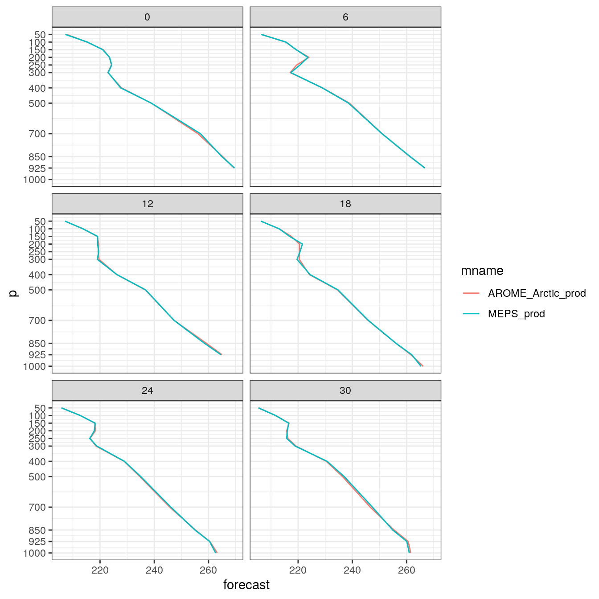
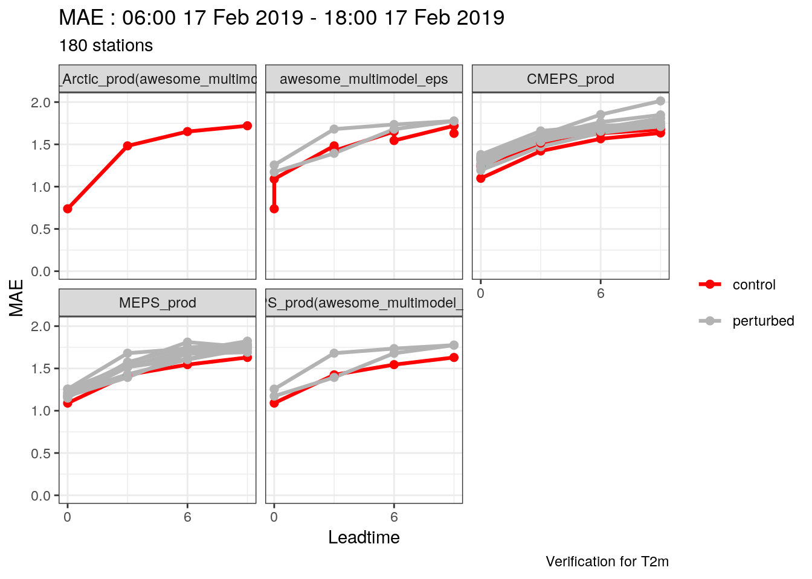
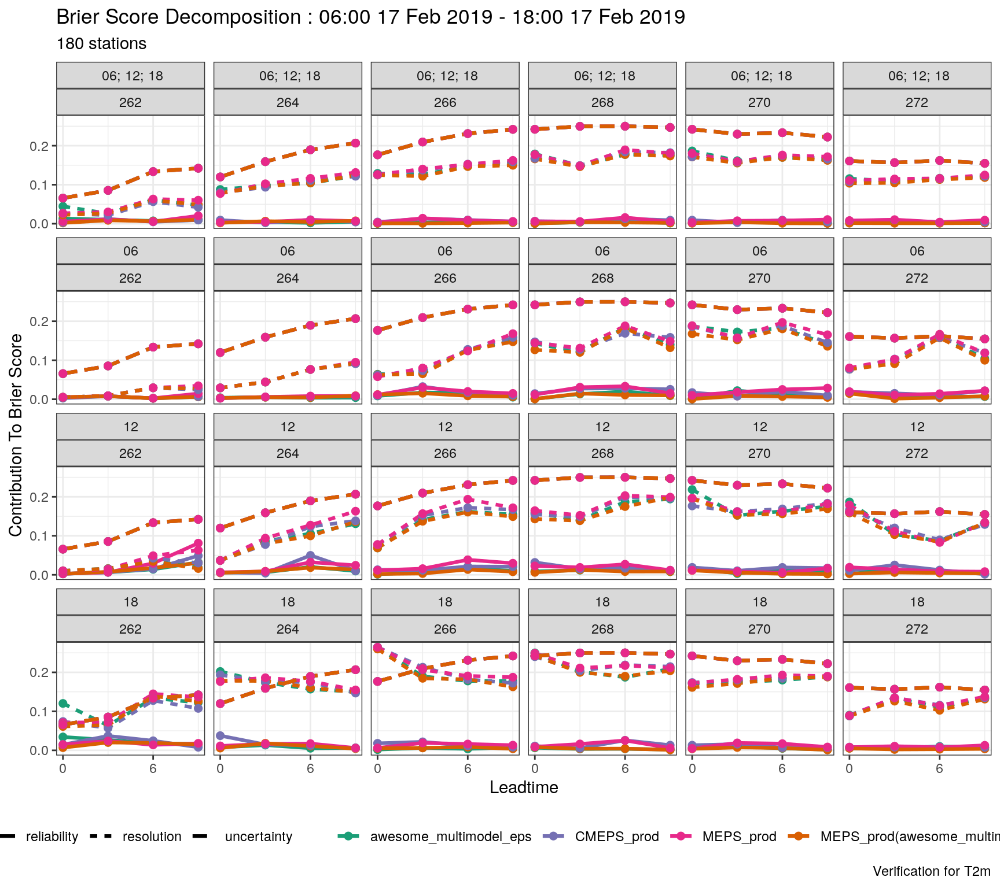

Chapter 4 Point Data
4.1 Introduction
We now have all of our data prepared for harp and we are ready to work with. That work includes undertsanding how harp data are structured, how to plot forecast data, how to manipulate the data, and verification.
We’ll be making use of all of the harp packages in this section, so we can just attach the full set of harp packages (and as always tidyverse and here)
4.2 Deterministic data
Let’s start with our deterministic data from the AROME Arctic model and member 0 of MEPS. First we load the data into our environment with the function read_point_forecast. As with other functions, we need to tell the function the start and end dates that we want, the names of the models, the parameter, the frequency of the forecasts, the path to the data and whether it is deterministic or ensemble data.
s10m <- read_point_forecast(
start_date = 2019021700,
end_date = 2019021718,
fcst_model = c("AROME_Arctic_prod", "MEPS_prod"),
fcst_type = "det",
parameter = "S10m",
by = "6h",
file_path = here("data/FCTABLE/deterministic")
)
s10m
## ● AROME_Arctic_prod
## # A tibble: 17,612 x 10
## fcdate fcst_cycle leadtime model_elevation p parameter SID units validdate AROME_Arctic_prod_det
## <int> <chr> <int> <dbl> <dbl> <chr> <int> <chr> <int> <dbl>
## 1 1550361600 00 0 63.9 NA S10m 1001 m/s 1550361600 7.49
## 2 1550361600 00 0 1.4 NA S10m 1002 m/s 1550361600 13.6
## 3 1550361600 00 0 24.9 NA S10m 1003 m/s 1550361600 7.50
## 4 1550361600 00 0 162. NA S10m 1004 m/s 1550361600 9.69
## 5 1550361600 00 0 -2.7 NA S10m 1006 m/s 1550361600 4.52
## 6 1550361600 00 0 21.6 NA S10m 1007 m/s 1550361600 9.88
## 7 1550361600 00 0 67.2 NA S10m 1008 m/s 1550361600 8.43
## 8 1550361600 00 0 1.2 NA S10m 1009 m/s 1550361600 13.1
## 9 1550361600 00 0 3.3 NA S10m 1010 m/s 1550361600 11.3
## 10 1550361600 00 0 20.7 NA S10m 1011 m/s 1550361600 6.46
## # … with 17,602 more rows
##
## ● MEPS_prod
## # A tibble: 81,804 x 10
## fcdate fcst_cycle leadtime model_elevation p parameter SID units validdate MEPS_prod_det
## <int> <chr> <int> <dbl> <dbl> <chr> <int> <chr> <int> <dbl>
## 1 1550361600 00 0 36.4 NA S10m 1001 m/s 1550361600 4.22
## 2 1550361600 00 0 4.1 NA S10m 1010 m/s 1550361600 11.9
## 3 1550361600 00 0 29.1 NA S10m 1014 m/s 1550361600 4.99
## 4 1550361600 00 0 2.6 NA S10m 1015 m/s 1550361600 11.3
## 5 1550361600 00 0 152. NA S10m 1018 m/s 1550361600 9.09
## 6 1550361600 00 0 16.4 NA S10m 1021 m/s 1550361600 7.48
## 7 1550361600 00 0 39.5 NA S10m 1022 m/s 1550361600 6.77
## 8 1550361600 00 0 69.1 NA S10m 1023 m/s 1550361600 6.42
## 9 1550361600 00 0 8.1 NA S10m 1025 m/s 1550361600 5.24
## 10 1550361600 00 0 5.2 NA S10m 1026 m/s 1550361600 4.74
## # … with 81,794 more rowsYou will see that data are in two data frames in a list. This list is actually an object of class harp_fcst. Many of the functions in harp only work on harp_fcst objects. Many of the dplyr methods also work on harp_fcst objects. The forecast data are in the last column with the suffix "_det".
Let’s take a look at some of the things you can do with harp_fcst objects. First expand_data
expand_date(s10m, fcdate)
## ● AROME_Arctic_prod
## # A tibble: 17,612 x 15
## fcdate fcst_cycle leadtime model_elevation p parameter SID units validdate AROME_Arctic_pr… fc_year fc_month
## <int> <chr> <int> <dbl> <dbl> <chr> <int> <chr> <int> <dbl> <dbl> <dbl>
## 1 1.55e9 00 0 63.9 NA S10m 1001 m/s 1.55e9 7.49 2019 2
## 2 1.55e9 00 0 1.4 NA S10m 1002 m/s 1.55e9 13.6 2019 2
## 3 1.55e9 00 0 24.9 NA S10m 1003 m/s 1.55e9 7.50 2019 2
## 4 1.55e9 00 0 162. NA S10m 1004 m/s 1.55e9 9.69 2019 2
## 5 1.55e9 00 0 -2.7 NA S10m 1006 m/s 1.55e9 4.52 2019 2
## 6 1.55e9 00 0 21.6 NA S10m 1007 m/s 1.55e9 9.88 2019 2
## 7 1.55e9 00 0 67.2 NA S10m 1008 m/s 1.55e9 8.43 2019 2
## 8 1.55e9 00 0 1.2 NA S10m 1009 m/s 1.55e9 13.1 2019 2
## 9 1.55e9 00 0 3.3 NA S10m 1010 m/s 1.55e9 11.3 2019 2
## 10 1.55e9 00 0 20.7 NA S10m 1011 m/s 1.55e9 6.46 2019 2
## # … with 17,602 more rows, and 3 more variables: fc_day <int>, fc_hour <int>, fc_minute <int>
##
## ● MEPS_prod
## # A tibble: 81,804 x 15
## fcdate fcst_cycle leadtime model_elevation p parameter SID units validdate MEPS_prod_det fc_year fc_month fc_day
## <int> <chr> <int> <dbl> <dbl> <chr> <int> <chr> <int> <dbl> <dbl> <dbl> <int>
## 1 1.55e9 00 0 36.4 NA S10m 1001 m/s 1.55e9 4.22 2019 2 17
## 2 1.55e9 00 0 4.1 NA S10m 1010 m/s 1.55e9 11.9 2019 2 17
## 3 1.55e9 00 0 29.1 NA S10m 1014 m/s 1.55e9 4.99 2019 2 17
## 4 1.55e9 00 0 2.6 NA S10m 1015 m/s 1.55e9 11.3 2019 2 17
## 5 1.55e9 00 0 152. NA S10m 1018 m/s 1.55e9 9.09 2019 2 17
## 6 1.55e9 00 0 16.4 NA S10m 1021 m/s 1.55e9 7.48 2019 2 17
## 7 1.55e9 00 0 39.5 NA S10m 1022 m/s 1.55e9 6.77 2019 2 17
## 8 1.55e9 00 0 69.1 NA S10m 1023 m/s 1.55e9 6.42 2019 2 17
## 9 1.55e9 00 0 8.1 NA S10m 1025 m/s 1.55e9 5.24 2019 2 17
## 10 1.55e9 00 0 5.2 NA S10m 1026 m/s 1.55e9 4.74 2019 2 17
## # … with 81,794 more rows, and 2 more variables: fc_hour <int>, fc_minute <int>
expand_date(s10m, validdate)
## ● AROME_Arctic_prod
## # A tibble: 17,612 x 15
## fcdate fcst_cycle leadtime model_elevation p parameter SID units validdate AROME_Arctic_pr… valid_year
## <int> <chr> <int> <dbl> <dbl> <chr> <int> <chr> <int> <dbl> <dbl>
## 1 1.55e9 00 0 63.9 NA S10m 1001 m/s 1.55e9 7.49 2019
## 2 1.55e9 00 0 1.4 NA S10m 1002 m/s 1.55e9 13.6 2019
## 3 1.55e9 00 0 24.9 NA S10m 1003 m/s 1.55e9 7.50 2019
## 4 1.55e9 00 0 162. NA S10m 1004 m/s 1.55e9 9.69 2019
## 5 1.55e9 00 0 -2.7 NA S10m 1006 m/s 1.55e9 4.52 2019
## 6 1.55e9 00 0 21.6 NA S10m 1007 m/s 1.55e9 9.88 2019
## 7 1.55e9 00 0 67.2 NA S10m 1008 m/s 1.55e9 8.43 2019
## 8 1.55e9 00 0 1.2 NA S10m 1009 m/s 1.55e9 13.1 2019
## 9 1.55e9 00 0 3.3 NA S10m 1010 m/s 1.55e9 11.3 2019
## 10 1.55e9 00 0 20.7 NA S10m 1011 m/s 1.55e9 6.46 2019
## # … with 17,602 more rows, and 4 more variables: valid_month <dbl>, valid_day <int>, valid_hour <int>, valid_minute <int>
##
## ● MEPS_prod
## # A tibble: 81,804 x 15
## fcdate fcst_cycle leadtime model_elevation p parameter SID units validdate MEPS_prod_det valid_year valid_month
## <int> <chr> <int> <dbl> <dbl> <chr> <int> <chr> <int> <dbl> <dbl> <dbl>
## 1 1.55e9 00 0 36.4 NA S10m 1001 m/s 1.55e9 4.22 2019 2
## 2 1.55e9 00 0 4.1 NA S10m 1010 m/s 1.55e9 11.9 2019 2
## 3 1.55e9 00 0 29.1 NA S10m 1014 m/s 1.55e9 4.99 2019 2
## 4 1.55e9 00 0 2.6 NA S10m 1015 m/s 1.55e9 11.3 2019 2
## 5 1.55e9 00 0 152. NA S10m 1018 m/s 1.55e9 9.09 2019 2
## 6 1.55e9 00 0 16.4 NA S10m 1021 m/s 1.55e9 7.48 2019 2
## 7 1.55e9 00 0 39.5 NA S10m 1022 m/s 1.55e9 6.77 2019 2
## 8 1.55e9 00 0 69.1 NA S10m 1023 m/s 1.55e9 6.42 2019 2
## 9 1.55e9 00 0 8.1 NA S10m 1025 m/s 1.55e9 5.24 2019 2
## 10 1.55e9 00 0 5.2 NA S10m 1026 m/s 1.55e9 4.74 2019 2
## # … with 81,794 more rows, and 3 more variables: valid_day <int>, valid_hour <int>, valid_minute <int>With the year, month, day, hour and minute now available, it’s easier to filter the data if you’d like. For example, if you just want the forecast wind speed at 15:00 UTC on 17 Feb 2019 for station ID 1010, which we is on Andøya, we could do something like
expand_date(s10m, validdate) %>%
filter(
SID == 1010,
valid_year == 2019,
valid_month == 2,
valid_day == 17,
valid_hour == 15
)
## ● AROME_Arctic_prod
## # A tibble: 3 x 15
## fcdate fcst_cycle leadtime model_elevation p parameter SID units validdate AROME_Arctic_pr… valid_year valid_month
## <int> <chr> <int> <dbl> <dbl> <chr> <int> <chr> <int> <dbl> <dbl> <dbl>
## 1 1.55e9 00 15 3.3 NA S10m 1010 m/s 1.55e9 3.75 2019 2
## 2 1.55e9 06 9 3.3 NA S10m 1010 m/s 1.55e9 3.19 2019 2
## 3 1.55e9 12 3 3.3 NA S10m 1010 m/s 1.55e9 1.38 2019 2
## # … with 3 more variables: valid_day <int>, valid_hour <int>, valid_minute <int>
##
## ● MEPS_prod
## # A tibble: 3 x 15
## fcdate fcst_cycle leadtime model_elevation p parameter SID units validdate MEPS_prod_det valid_year valid_month
## <int> <chr> <int> <dbl> <dbl> <chr> <int> <chr> <int> <dbl> <dbl> <dbl>
## 1 1.55e9 00 15 4.1 NA S10m 1010 m/s 1.55e9 5.99 2019 2
## 2 1.55e9 06 9 4.1 NA S10m 1010 m/s 1.55e9 4.58 2019 2
## 3 1.55e9 12 3 4.1 NA S10m 1010 m/s 1.55e9 3.30 2019 2
## # … with 3 more variables: valid_day <int>, valid_hour <int>, valid_minute <int>Equally, we could just get the data for one forecast
expand_date(s10m, fcdate) %>%
filter(
SID == 1010,
fc_year == 2019,
fc_month == 2,
fc_day == 17,
fc_hour == 12
) %>%
mutate(validdate = unix2datetime(validdate))
## ● AROME_Arctic_prod
## # A tibble: 17 x 15
## fcdate fcst_cycle leadtime model_elevation p parameter SID units validdate AROME_Arctic_pr… fc_year
## <int> <chr> <int> <dbl> <dbl> <chr> <int> <chr> <dttm> <dbl> <dbl>
## 1 1.55e9 12 0 3.3 NA S10m 1010 m/s 2019-02-17 12:00:00 1.54 2019
## 2 1.55e9 12 3 3.3 NA S10m 1010 m/s 2019-02-17 15:00:00 1.38 2019
## 3 1.55e9 12 6 3.3 NA S10m 1010 m/s 2019-02-17 18:00:00 6.14 2019
## 4 1.55e9 12 9 3.3 NA S10m 1010 m/s 2019-02-17 21:00:00 6.60 2019
## 5 1.55e9 12 12 3.3 NA S10m 1010 m/s 2019-02-18 00:00:00 5.95 2019
## 6 1.55e9 12 15 3.3 NA S10m 1010 m/s 2019-02-18 03:00:00 6.08 2019
## 7 1.55e9 12 18 3.3 NA S10m 1010 m/s 2019-02-18 06:00:00 5.85 2019
## 8 1.55e9 12 21 3.3 NA S10m 1010 m/s 2019-02-18 09:00:00 6.77 2019
## 9 1.55e9 12 24 3.3 NA S10m 1010 m/s 2019-02-18 12:00:00 6.14 2019
## 10 1.55e9 12 27 3.3 NA S10m 1010 m/s 2019-02-18 15:00:00 8.25 2019
## 11 1.55e9 12 30 3.3 NA S10m 1010 m/s 2019-02-18 18:00:00 8.33 2019
## 12 1.55e9 12 33 3.3 NA S10m 1010 m/s 2019-02-18 21:00:00 9.22 2019
## 13 1.55e9 12 36 3.3 NA S10m 1010 m/s 2019-02-19 00:00:00 11.8 2019
## 14 1.55e9 12 39 3.3 NA S10m 1010 m/s 2019-02-19 03:00:00 14.5 2019
## 15 1.55e9 12 42 3.3 NA S10m 1010 m/s 2019-02-19 06:00:00 17.1 2019
## 16 1.55e9 12 45 3.3 NA S10m 1010 m/s 2019-02-19 09:00:00 16.0 2019
## 17 1.55e9 12 48 3.3 NA S10m 1010 m/s 2019-02-19 12:00:00 16.1 2019
## # … with 4 more variables: fc_month <dbl>, fc_day <int>, fc_hour <int>, fc_minute <int>
##
## ● MEPS_prod
## # A tibble: 17 x 15
## fcdate fcst_cycle leadtime model_elevation p parameter SID units validdate MEPS_prod_det fc_year
## <int> <chr> <int> <dbl> <dbl> <chr> <int> <chr> <dttm> <dbl> <dbl>
## 1 1.55e9 12 0 4.1 NA S10m 1010 m/s 2019-02-17 12:00:00 2.30 2019
## 2 1.55e9 12 3 4.1 NA S10m 1010 m/s 2019-02-17 15:00:00 3.30 2019
## 3 1.55e9 12 6 4.1 NA S10m 1010 m/s 2019-02-17 18:00:00 6.34 2019
## 4 1.55e9 12 9 4.1 NA S10m 1010 m/s 2019-02-17 21:00:00 8.06 2019
## 5 1.55e9 12 12 4.1 NA S10m 1010 m/s 2019-02-18 00:00:00 6.79 2019
## 6 1.55e9 12 15 4.1 NA S10m 1010 m/s 2019-02-18 03:00:00 5.95 2019
## 7 1.55e9 12 18 4.1 NA S10m 1010 m/s 2019-02-18 06:00:00 5.87 2019
## 8 1.55e9 12 21 4.1 NA S10m 1010 m/s 2019-02-18 09:00:00 7.46 2019
## 9 1.55e9 12 24 4.1 NA S10m 1010 m/s 2019-02-18 12:00:00 6.33 2019
## 10 1.55e9 12 27 4.1 NA S10m 1010 m/s 2019-02-18 15:00:00 8.35 2019
## 11 1.55e9 12 30 4.1 NA S10m 1010 m/s 2019-02-18 18:00:00 9.69 2019
## 12 1.55e9 12 33 4.1 NA S10m 1010 m/s 2019-02-18 21:00:00 9.66 2019
## 13 1.55e9 12 36 4.1 NA S10m 1010 m/s 2019-02-19 00:00:00 11.1 2019
## 14 1.55e9 12 39 4.1 NA S10m 1010 m/s 2019-02-19 03:00:00 12.8 2019
## 15 1.55e9 12 42 4.1 NA S10m 1010 m/s 2019-02-19 06:00:00 14.9 2019
## 16 1.55e9 12 45 4.1 NA S10m 1010 m/s 2019-02-19 09:00:00 17.6 2019
## 17 1.55e9 12 48 4.1 NA S10m 1010 m/s 2019-02-19 12:00:00 16.9 2019
## # … with 4 more variables: fc_month <dbl>, fc_day <int>, fc_hour <int>, fc_minute <int>harp doesn’t yet include any functions for plotting deterministic forecasts, but we can easily make the data into a single data frame using bind_fcst.
bind_rows(
AROME_Arctic_prod = rename(s10m$AROME_Arctic_prod, forecast = AROME_Arctic_prod_det),
MEPS_prod = rename(s10m$MEPS_prod, forecast = MEPS_prod_det),
.id = "mname"
)
## # A tibble: 99,416 x 11
## mname fcdate fcst_cycle leadtime model_elevation p parameter SID units validdate forecast
## <chr> <int> <chr> <int> <dbl> <dbl> <chr> <int> <chr> <int> <dbl>
## 1 AROME_Arctic_prod 1550361600 00 0 63.9 NA S10m 1001 m/s 1550361600 7.49
## 2 AROME_Arctic_prod 1550361600 00 0 1.4 NA S10m 1002 m/s 1550361600 13.6
## 3 AROME_Arctic_prod 1550361600 00 0 24.9 NA S10m 1003 m/s 1550361600 7.50
## 4 AROME_Arctic_prod 1550361600 00 0 162. NA S10m 1004 m/s 1550361600 9.69
## 5 AROME_Arctic_prod 1550361600 00 0 -2.7 NA S10m 1006 m/s 1550361600 4.52
## 6 AROME_Arctic_prod 1550361600 00 0 21.6 NA S10m 1007 m/s 1550361600 9.88
## 7 AROME_Arctic_prod 1550361600 00 0 67.2 NA S10m 1008 m/s 1550361600 8.43
## 8 AROME_Arctic_prod 1550361600 00 0 1.2 NA S10m 1009 m/s 1550361600 13.1
## 9 AROME_Arctic_prod 1550361600 00 0 3.3 NA S10m 1010 m/s 1550361600 11.3
## 10 AROME_Arctic_prod 1550361600 00 0 20.7 NA S10m 1011 m/s 1550361600 6.46
## # … with 99,406 more rowsYou will also find in R directory a function, bind_fcst that does this binding for you - this function will be part of harp soon.
bind_fcst(s10m)
## # A tibble: 99,416 x 11
## mname fcdate fcst_cycle leadtime model_elevation p parameter SID units validdate forecast
## <chr> <int> <chr> <int> <dbl> <dbl> <chr> <int> <chr> <int> <dbl>
## 1 AROME_Arctic_prod 1550361600 00 0 63.9 NA S10m 1001 m/s 1550361600 7.49
## 2 AROME_Arctic_prod 1550361600 00 0 1.4 NA S10m 1002 m/s 1550361600 13.6
## 3 AROME_Arctic_prod 1550361600 00 0 24.9 NA S10m 1003 m/s 1550361600 7.50
## 4 AROME_Arctic_prod 1550361600 00 0 162. NA S10m 1004 m/s 1550361600 9.69
## 5 AROME_Arctic_prod 1550361600 00 0 -2.7 NA S10m 1006 m/s 1550361600 4.52
## 6 AROME_Arctic_prod 1550361600 00 0 21.6 NA S10m 1007 m/s 1550361600 9.88
## 7 AROME_Arctic_prod 1550361600 00 0 67.2 NA S10m 1008 m/s 1550361600 8.43
## 8 AROME_Arctic_prod 1550361600 00 0 1.2 NA S10m 1009 m/s 1550361600 13.1
## 9 AROME_Arctic_prod 1550361600 00 0 3.3 NA S10m 1010 m/s 1550361600 11.3
## 10 AROME_Arctic_prod 1550361600 00 0 20.7 NA S10m 1011 m/s 1550361600 6.46
## # … with 99,406 more rowsYour turn:
- Plot the the forecast wind speed at REIPA for both AROME_Arctic_prod and MEPS_prod for each fcst_cycle as a function of validdate. [You can get the SID for REIPA from the built in list of stations which is in the variable station_list]
Solution:
reipa_sid <- filter(station_list, name == "REIPA") %>%
pull(SID)
bind_fcst(s10m) %>%
filter(SID == reipa_sid) %>%
mutate(validdate = unix2datetime(validdate)) %>%
ggplot(aes(validdate, forecast, colour = fcst_cycle)) +
geom_line() +
facet_wrap(vars(mname), ncol = 1) +
scale_x_datetime(
breaks = lubridate::ymd_hm(seq_dates(2019021706, 2019021918, "12h"))
) +
labs(
x = "Date-time",
y = bquote("Wind speed [ms"^-1*"]"),
colour = "Forecast cycle",
title = "Forecast Wind Speed at REIPA"
) +
theme_bw() +
theme(legend.position = "bottom")
bind_fcst(s10m) %>%
filter(SID == reipa_sid) %>%
mutate(validdate = unix2datetime(validdate)) %>%
ggplot(aes(validdate, forecast, colour = mname)) +
geom_line() +
facet_wrap(vars(fcst_cycle), ncol = 1) +
scale_x_datetime(
breaks = lubridate::ymd_hm(seq_dates(2019021706, 2019021918, "12h"))
) +
labs(
x = "Date-time",
y = bquote("Wind speed [ms"^-1*"]"),
colour = "",
title = "Forecast Wind Speed at REIPA"
) +
theme_bw() +
theme(legend.position = "bottom")Now let’s read in some observations. To make sure we get the correct dates for the observations we can get the first and last validdates from the forecast. We could also extract the station IDs from the forecasts - which we can do with a little bit of “functional programming”.
station_ids <- map(s10m, pull, SID) %>%
reduce(union)
obs <- read_point_obs(
start_date = first_validdate(s10m),
end_date = last_validdate(s10m),
stations = station_ids,
parameter = "S10m",
obs_path = here("data/OBSTABLE")
)Now that we have the observations we can join them to our forecast data using the function join_to_fcst. This will take each of the data frames in our forecast list and perform an inner join with the observations - that means that only rows that are common to both data frames are kept.
We have now added an observations column to each of the forecasts, so we could also include the observations in our plots.
Your turn:
- Add observations as a geom_point to your plots. [hint: you can map an aesthetic to an individual geom]
Solution:
bind_fcst(s10m) %>%
filter(SID == reipa_sid) %>%
mutate(validdate = unix2datetime(validdate)) %>%
ggplot(aes(validdate, forecast, colour = mname)) +
geom_line() +
geom_point(aes(y = S10m, shape = "Observation"), colour = "blue") +
scale_shape_manual(values = 21) +
facet_wrap(vars(fcst_cycle), ncol = 1) +
scale_x_datetime(
breaks = lubridate::ymd_hm(seq_dates(2019021706, 2019021918, "12h"))
) +
labs(
x = "Date-time",
y = bquote("Wind speed [ms"^-1*"]"),
colour = "",
title = "Forecast Wind Speed at REIPA",
shape = ""
) +
theme_bw() +
theme(legend.position = "bottom")
4.2.1 Verifying deterministic forecasts
Now that we have both forecasts and observations we can verify the forecasts. This is very simple in harp - we just run the function det_verify giving that data and telling it which column has the observations:
det_verify(s10m, S10m)
## $det_summary_scores
## # A tibble: 34 x 7
## mname leadtime num_cases bias rmse mae stde
## <chr> <int> <int> <dbl> <dbl> <dbl> <dbl>
## 1 AROME_Arctic_prod 0 629 0.137 2.57 1.80 2.57
## 2 AROME_Arctic_prod 3 679 0.0580 2.34 1.60 2.34
## 3 AROME_Arctic_prod 6 622 0.0390 2.38 1.65 2.38
## 4 AROME_Arctic_prod 9 679 0.0942 2.08 1.42 2.08
## 5 AROME_Arctic_prod 12 628 0.169 2.24 1.53 2.24
## 6 AROME_Arctic_prod 15 675 0.295 2.17 1.53 2.15
## 7 AROME_Arctic_prod 18 630 0.319 2.22 1.53 2.20
## 8 AROME_Arctic_prod 21 676 0.480 2.23 1.61 2.17
## 9 AROME_Arctic_prod 24 628 0.388 2.34 1.61 2.31
## 10 AROME_Arctic_prod 27 674 0.538 2.39 1.69 2.33
## # … with 24 more rows
##
## $det_threshold_scores
## data frame with 0 columns and 0 rows
##
## attr(,"parameter")
## [1] "S10m"
## attr(,"start_date")
## [1] "2019021700"
## attr(,"end_date")
## [1] "2019021718"
## attr(,"num_stations")
## [1] 828You will see that the output is a list of two data frames - one fore summary scores and one for threshold scores. The threshold scores data frame contains only missing data as we didn’t give the function any thresholds to verify for. However, that is easily done:
verif_s10m <- det_verify(s10m, S10m, thresholds = seq(2.5, 12.5, 2.5))
verif_s10m
## $det_summary_scores
## # A tibble: 34 x 7
## mname leadtime num_cases bias rmse mae stde
## <chr> <int> <int> <dbl> <dbl> <dbl> <dbl>
## 1 AROME_Arctic_prod 0 629 0.137 2.57 1.80 2.57
## 2 AROME_Arctic_prod 3 679 0.0580 2.34 1.60 2.34
## 3 AROME_Arctic_prod 6 622 0.0390 2.38 1.65 2.38
## 4 AROME_Arctic_prod 9 679 0.0942 2.08 1.42 2.08
## 5 AROME_Arctic_prod 12 628 0.169 2.24 1.53 2.24
## 6 AROME_Arctic_prod 15 675 0.295 2.17 1.53 2.15
## 7 AROME_Arctic_prod 18 630 0.319 2.22 1.53 2.20
## 8 AROME_Arctic_prod 21 676 0.480 2.23 1.61 2.17
## 9 AROME_Arctic_prod 24 628 0.388 2.34 1.61 2.31
## 10 AROME_Arctic_prod 27 674 0.538 2.39 1.69 2.33
## # … with 24 more rows
##
## $det_threshold_scores
## # A tibble: 170 x 40
## mname leadtime threshold num_cases_for_t… num_cases_for_t… num_cases_for_t… cont_tab threat_score hit_rate miss_rate
## <chr> <int> <dbl> <dbl> <dbl> <dbl> <list> <dbl> <dbl> <dbl>
## 1 AROM… 0 2.5 461 418 421 <tibble… 0.820 0.904 0.0957
## 2 AROM… 3 2.5 482 418 436 <tibble… 0.772 0.890 0.110
## 3 AROM… 6 2.5 410 348 358 <tibble… 0.722 0.851 0.149
## 4 AROM… 9 2.5 449 365 403 <tibble… 0.710 0.874 0.126
## 5 AROM… 12 2.5 410 328 363 <tibble… 0.685 0.857 0.143
## 6 AROM… 15 2.5 459 358 422 <tibble… 0.699 0.897 0.103
## 7 AROM… 18 2.5 437 338 389 <tibble… 0.664 0.858 0.142
## 8 AROM… 21 2.5 497 374 466 <tibble… 0.690 0.917 0.0829
## 9 AROM… 24 2.5 452 348 413 <tibble… 0.684 0.888 0.112
## 10 AROM… 27 2.5 496 374 471 <tibble… 0.704 0.933 0.0668
## # … with 160 more rows, and 30 more variables: false_alarm_rate <dbl>, false_alarm_ratio <dbl>, heidke_skill_score <dbl>,
## # pierce_skill_score <dbl>, kuiper_skill_score <dbl>, percent_correct <dbl>, frequency_bias <dbl>,
## # equitable_threat_score <dbl>, odds_ratio <dbl>, log_odds_ratio <dbl>, odds_ratio_skill_score <dbl>,
## # extreme_dependency_score <dbl>, symmetric_eds <dbl>, extreme_dependency_index <dbl>, symmetric_edi <dbl>,
## # threat_score_std_error <dbl>, hit_rate_std_error <dbl>, false_alarm_rate_std_error <dbl>,
## # false_alarm_ratio_std_error <dbl>, heidke_skill_score_std_error <dbl>, pierce_skill_score_std_error <dbl>,
## # percent_correct_std_error <dbl>, equitable_threat_score_std_error <dbl>, log_odds_ratio_std_error <dbl>,
## # log_odds_ratio_degrees_of_freedom <dbl>, odds_ratio_skill_score_std_error <dbl>,
## # extreme_dependency_score_std_error <dbl>, symmetric_eds_std_error <dbl>, extreme_dependency_index_std_error <dbl>,
## # symmetric_edi_std_error <dbl>
##
## attr(,"parameter")
## [1] "S10m"
## attr(,"start_date")
## [1] "2019021700"
## attr(,"end_date")
## [1] "2019021718"
## attr(,"num_stations")
## [1] 828As you can see, a very large number of scores are computed. harp has a function for plotting point verification scores, plot_point_verif. For summary scores, you just need to give it the verification data and tell it which score you’d like to plot, as well as tell the function that it is deterministic verification data.

One thing you’ll immediately notice is that the number of cases for MEPS_prod is much larger than for AROME_Arctic_prod. This means that in this verification we are not making a fair comparison - we should actually only be verifying the dates and locations that are common to both systems. harp provides the function common_cases() to do just that!
common_cases(s10m)
## ● AROME_Arctic_prod
## # A tibble: 10,170 x 14
## fcdate fcst_cycle leadtime model_elevation p parameter SID units validdate AROME_Arctic_pr… lon lat elev
## <int> <chr> <int> <dbl> <dbl> <chr> <int> <chr> <int> <dbl> <dbl> <dbl> <dbl>
## 1 1.55e9 00 0 63.9 NA S10m 1001 m/s 1.55e9 7.49 -8.67 70.9 9
## 2 1.55e9 00 0 3.3 NA S10m 1010 m/s 1.55e9 11.3 16.1 69.3 13
## 3 1.55e9 00 0 0.5 NA S10m 1015 m/s 1.55e9 11.2 17.8 69.6 14
## 4 1.55e9 00 0 169. NA S10m 1018 m/s 1.55e9 8.43 16.0 69.2 436
## 5 1.55e9 00 0 73.5 NA S10m 1023 m/s 1.55e9 5.08 18.5 69.1 77
## 6 1.55e9 00 0 22.2 NA S10m 1025 m/s 1.55e9 6.78 18.9 69.7 9
## 7 1.55e9 00 0 14.4 NA S10m 1026 m/s 1.55e9 6.18 18.9 69.7 115
## 8 1.55e9 00 0 -2.6 NA S10m 1033 m/s 1.55e9 10.9 19.5 70.2 21
## 9 1.55e9 00 0 125. NA S10m 1036 m/s 1.55e9 8.56 20.4 69.6 700
## 10 1.55e9 00 0 160. NA S10m 1037 m/s 1.55e9 9.69 20.3 69.4 20
## # … with 10,160 more rows, and 1 more variable: S10m <dbl>
##
## ● MEPS_prod
## # A tibble: 10,170 x 14
## fcdate fcst_cycle leadtime model_elevation p parameter SID units validdate MEPS_prod_det lon lat elev S10m
## <int> <chr> <int> <dbl> <dbl> <chr> <int> <chr> <int> <dbl> <dbl> <dbl> <dbl> <dbl>
## 1 1.55e9 00 0 36.4 NA S10m 1001 m/s 1.55e9 4.22 -8.67 70.9 9 8.8
## 2 1.55e9 00 0 4.1 NA S10m 1010 m/s 1.55e9 11.9 16.1 69.3 13 11.3
## 3 1.55e9 00 0 2.6 NA S10m 1015 m/s 1.55e9 11.3 17.8 69.6 14 14
## 4 1.55e9 00 0 152. NA S10m 1018 m/s 1.55e9 9.09 16.0 69.2 436 12
## 5 1.55e9 00 0 69.1 NA S10m 1023 m/s 1.55e9 6.42 18.5 69.1 77 7.4
## 6 1.55e9 00 0 8.1 NA S10m 1025 m/s 1.55e9 5.24 18.9 69.7 9 8.8
## 7 1.55e9 00 0 5.2 NA S10m 1026 m/s 1.55e9 4.74 18.9 69.7 115 4.9
## 8 1.55e9 00 0 28.5 NA S10m 1033 m/s 1.55e9 10.1 19.5 70.2 21 16
## 9 1.55e9 00 0 129 NA S10m 1036 m/s 1.55e9 8.64 20.4 69.6 700 8
## 10 1.55e9 00 0 94.5 NA S10m 1037 m/s 1.55e9 9.47 20.3 69.4 20 3
## # … with 10,160 more rows
s10m <- common_cases(s10m)You will see that now both AROME_Arctic_prod and MEPS_prod have the exact same number of rows in their data. Now if we run the verfication again and plot the same score we will see that both forecasting systems have the same number of cases.
verif_s10m <- det_verify(s10m, S10m, thresholds = seq(2.5, 12.5, 2.5))
plot_point_verif(verif_s10m, bias, verif_type = "det")
Your turn:
- Try plotting one of the threshold scores (frequency_bias, for example). Try to figure out wht the plot looks so weird
Solution:

The plot looks weird becasue it’s attempting to plot scores for all thresholds at the same time.
When we have more than one threshold, we need to tell plot_point_verif what to do - there are 2 options - to facet or to filter, with the arguments facet_by or filter_by. These arguments work in pretty much the same way as facet_wrap. For example if we wanted the facet the scores by threshold, we would do

Or, if we just wanted the plot for a threshold of 7.5 ms-1, we would use filter_by
4.2.2 Verification by group
The default behaviour of harp verification functions is to compute the verification metrics for each lead time. However, you can also compute the scores for any groups of data, much in the same way as group_by enables you to do. In this case groups are specified in the groupings argument to the verification function, and unlike group_by the column names you wish to use for grouping variables must be quoted (this may change in the future for consistency with group_by) and if there are more than one in a charcater vector. We could for example compute scores for each valid time:
(verif_s10m <- det_verify(s10m, S10m, groupings = "validdate"))
## $det_summary_scores
## # A tibble: 46 x 7
## mname validdate num_cases bias rmse mae stde
## <chr> <int> <int> <dbl> <dbl> <dbl> <dbl>
## 1 AROME_Arctic_prod 1550361600 147 0.276 3.04 2.28 3.04
## 2 AROME_Arctic_prod 1550372400 155 0.121 2.90 2.11 2.91
## 3 AROME_Arctic_prod 1550383200 270 0.0203 2.68 1.81 2.68
## 4 AROME_Arctic_prod 1550394000 312 -0.295 1.95 1.35 1.93
## 5 AROME_Arctic_prod 1550404800 459 -0.235 2.07 1.44 2.06
## 6 AROME_Arctic_prod 1550415600 468 -0.112 1.95 1.26 1.95
## 7 AROME_Arctic_prod 1550426400 572 -0.0128 1.84 1.30 1.84
## 8 AROME_Arctic_prod 1550437200 628 0.192 2.05 1.39 2.05
## 9 AROME_Arctic_prod 1550448000 560 -0.0470 2.25 1.53 2.25
## 10 AROME_Arctic_prod 1550458800 620 0.126 2.04 1.45 2.03
## # … with 36 more rows
##
## $det_threshold_scores
## data frame with 0 columns and 0 rows
##
## attr(,"parameter")
## [1] "S10m"
## attr(,"start_date")
## [1] "2019021700"
## attr(,"end_date")
## [1] "2019021718"
## attr(,"num_stations")
## [1] 167To plot the score, we then need to tell plot_point_verif to use validdate as the x-axis (the default is lead time)

If you want to change the date into a readable format, you can use the mutate_list function.
plot_point_verif(
mutate_list(verif_s10m, date_time = unix2datetime(validdate)),
bias,
x_axis = date_time
)Your turn:
- Compute verification scores for stations with elevations \(\geqslant 300 m\) and those \(\lt 300 m\). for each lead time and thresholds of 2.5 - 12.5 ms-1 every 2.5 ms-1. To classify the station heights, you can use
stations <- mutate(
station_list,
station_height = cut(elev, breaks = c(-Inf, 300, Inf), labels = c("lt_300m", "ge_300m"))
)
s10m <- join_to_fcst(s10m, stations, force_join = TRUE)- Plot the equitable threat score for each threshold and station height group.
Solutions
- Compute verification scores for stations with elevations \(\geqslant 300 m\) and those \(\lt 300 m\). for each lead time and thresholds of 2.5 - 12.5 ms-1 every 2.5 ms-1.
stations <- mutate(
station_list,
station_height = cut(elev, breaks = c(-Inf, 300, Inf), labels = c("> 300m", ">= 300m"))
)
(verif_s10m <- join_to_fcst(s10m, stations, force_join = TRUE) %>%
det_verify(S10m, groupings = c("leadtime", "station_height"), thresholds = seq(2.5, 12.5, 2.5)))
## $det_summary_scores
## # A tibble: 0 x 8
## # … with 8 variables: mname <chr>, leadtime <int>, station_height <fct>, num_cases <int>, bias <dbl>, rmse <dbl>,
## # mae <dbl>, stde <dbl>
##
## $det_threshold_scores
## # A tibble: 0 x 41
## # … with 41 variables: mname <chr>, leadtime <int>, station_height <fct>, threshold <dbl>,
## # num_cases_for_threshold_total <dbl>, num_cases_for_threshold_observed <dbl>, num_cases_for_threshold_forecast <dbl>,
## # cont_tab <list>, threat_score <dbl>, hit_rate <dbl>, miss_rate <dbl>, false_alarm_rate <dbl>,
## # false_alarm_ratio <dbl>, heidke_skill_score <dbl>, pierce_skill_score <dbl>, kuiper_skill_score <dbl>,
## # percent_correct <dbl>, frequency_bias <dbl>, equitable_threat_score <dbl>, odds_ratio <dbl>, log_odds_ratio <dbl>,
## # odds_ratio_skill_score <dbl>, extreme_dependency_score <dbl>, symmetric_eds <dbl>, extreme_dependency_index <dbl>,
## # symmetric_edi <dbl>, threat_score_std_error <dbl>, hit_rate_std_error <dbl>, false_alarm_rate_std_error <dbl>,
## # false_alarm_ratio_std_error <dbl>, heidke_skill_score_std_error <dbl>, pierce_skill_score_std_error <dbl>,
## # percent_correct_std_error <dbl>, equitable_threat_score_std_error <dbl>, log_odds_ratio_std_error <dbl>,
## # log_odds_ratio_degrees_of_freedom <dbl>, odds_ratio_skill_score_std_error <dbl>,
## # extreme_dependency_score_std_error <dbl>, symmetric_eds_std_error <dbl>, extreme_dependency_index_std_error <dbl>,
## # symmetric_edi_std_error <dbl>
##
## attr(,"parameter")
## [1] "S10m"
## attr(,"start_date")
## [1] "NANANANA"
## attr(,"end_date")
## [1] "NANANANA"
## attr(,"num_stations")
## [1] 0- Plot the equitable threat score for each threshold and station height group.
plot_point_verif(
mutate_list(
verif_s10m,
threshold = paste("Wind speed >=", threshold, "m/s"),
station_height = paste("Station altitude", station_height)
),
equitable_threat_score,
facet_by = vars(fct_inorder(threshold), station_height),
num_facet_cols = 2
)
## NULLBearing in mind the plot_point_verif uses ggplot, you could also do the faceting yourself and have more control - for example, you coud use facet_grid
4.2.3 Vertical profiles
When we converted our data to sqlite, we also converted some upper air data for temperature and dew point temperature. To read in upper air data, we need to tell read_point_forecast and read_point_obs what the vertical coordinate is.
(t_upper <- read_point_forecast(
start_date = 2019021700,
end_date = 2019021718,
fcst_model = c("AROME_Arctic_prod", "MEPS_prod"),
fcst_type = "det",
parameter = "T",
file_path = here("data/FCTABLE/deterministic"),
vertical_coordinate = "pressure"
))
## ● AROME_Arctic_prod
## # A tibble: 6,967 x 10
## fcdate fcst_cycle leadtime model_elevation p parameter SID units validdate AROME_Arctic_prod_det
## <int> <chr> <int> <dbl> <dbl> <chr> <int> <chr> <int> <dbl>
## 1 1550361600 00 0 50.6 50 T 1001 K 1550361600 207.
## 2 1550361600 00 0 50.6 100 T 1001 K 1550361600 212.
## 3 1550361600 00 0 50.6 150 T 1001 K 1550361600 217.
## 4 1550361600 00 0 50.6 200 T 1001 K 1550361600 218
## 5 1550361600 00 0 50.6 250 T 1001 K 1550361600 214.
## 6 1550361600 00 0 50.6 300 T 1001 K 1550361600 218.
## 7 1550361600 00 0 50.6 400 T 1001 K 1550361600 230.
## 8 1550361600 00 0 50.6 500 T 1001 K 1550361600 240.
## 9 1550361600 00 0 50.6 700 T 1001 K 1550361600 254.
## 10 1550361600 00 0 50.6 850 T 1001 K 1550361600 262.
## # … with 6,957 more rows
##
## ● MEPS_prod
## # A tibble: 29,956 x 10
## fcdate fcst_cycle leadtime model_elevation p parameter SID units validdate MEPS_prod_det
## <int> <chr> <int> <dbl> <dbl> <chr> <int> <chr> <int> <dbl>
## 1 1550361600 00 0 55.6 50 T 1001 K 1550361600 206.
## 2 1550361600 00 0 55.6 100 T 1001 K 1550361600 212.
## 3 1550361600 00 0 55.6 150 T 1001 K 1550361600 217.
## 4 1550361600 00 0 55.6 200 T 1001 K 1550361600 218.
## 5 1550361600 00 0 55.6 250 T 1001 K 1550361600 214.
## 6 1550361600 00 0 55.6 300 T 1001 K 1550361600 218.
## 7 1550361600 00 0 55.6 400 T 1001 K 1550361600 230.
## 8 1550361600 00 0 55.6 500 T 1001 K 1550361600 240.
## 9 1550361600 00 0 55.6 700 T 1001 K 1550361600 254.
## 10 1550361600 00 0 55.6 850 T 1001 K 1550361600 261.
## # … with 29,946 more rows
td_upper <- read_point_forecast(
start_date = 2019021700,
end_date = 2019021718,
fcst_model = c("AROME_Arctic_prod", "MEPS_prod"),
fcst_type = "det",
parameter = "Td",
file_path = here("data/FCTABLE/deterministic"),
vertical_coordinate = "pressure"
)harp has a function for plotting vertical profile, that allows you compare the profiles from different models - but only for the same parameter.

You can also plot the profiles on skew-t / log P grid by setting skew_t = TRUE. However, it should be noted that temperatures need to be in °C rather than Kelvin. We can convert the units by using scale_point_forecast.
scale_point_forecast(t_upper, -273.15, new_units = "degC") %>%
plot_vertical_profile(
SID = 22113,
fcdate = 2019021712,
lead_time = 24,
skew_t = TRUE
)
Your turn:
- You can specify more than 1 station, date, and / or lead time in
plot_vertical_profile. Experiment with making some multi panel plots. - Can you figure out how you would add the dew point temperature to the plots?
Solution
- Experiment with making some multi panel plots.
plot_vertical_profile(
t_upper,
SID = 22113,
fcdate = 2019021700,
lead_time = seq(0, 30, 6),
facet_by = vars(leadtime)
)
- Can you figure out how you would add the dew point temperature to the plots?
4.3 Reading in ensemble data
Now we have seen harp in action with deterministic data, let’s move on to ensemble data. harp’s origins are in verification of ensemble data, so the functionality here is a little more mature. Many of the same functions that were introduced in the deterministic section can be used for ensemble data as well. There are also functions that currently only work with ensemble data and are in the process of being upgraded to handle deterministic forecasts as well.
We can use the same read_point_forecast function to read in ensemble data - we just need to tell it that we are reading ensemble data by setting fcst_type = "eps".
library(tidyverse)
library(here)
library(harp)
(t2m <- read_point_forecast(
start_date = 2019021700,
end_date = 2019021718,
fcst_model = "MEPS_prod",
fcst_type = "EPS",
parameter = "T2m",
lead_time = seq(0, 12, 3),
by = "6h",
file_path = here("data/FCTABLE/ensemble"),
file_template = "fctable_eps_all_leads"
))
## ● MEPS_prod
## # A tibble: 22,980 x 19
## fcdate fcst_cycle leadtime model_elevation p parameter SID units validdate MEPS_prod_mbr000 MEPS_prod_mbr001
## <int> <chr> <int> <dbl> <dbl> <chr> <int> <chr> <int> <dbl> <dbl>
## 1 1.55e9 00 0 36.4 NA T2m 1001 K 1.55e9 268. 269.
## 2 1.55e9 00 0 4.1 NA T2m 1010 K 1.55e9 275. 276.
## 3 1.55e9 00 0 29.1 NA T2m 1014 K 1.55e9 273. 273.
## 4 1.55e9 00 0 2.6 NA T2m 1015 K 1.55e9 275. 276.
## 5 1.55e9 00 0 152. NA T2m 1018 K 1.55e9 271. 272.
## 6 1.55e9 00 0 69.1 NA T2m 1023 K 1.55e9 272. 272.
## 7 1.55e9 00 0 8.1 NA T2m 1025 K 1.55e9 272. 273.
## 8 1.55e9 00 0 5.2 NA T2m 1026 K 1.55e9 272. 272.
## 9 1.55e9 00 0 5.2 NA T2m 1027 K 1.55e9 273. 273.
## 10 1.55e9 00 0 28.5 NA T2m 1033 K 1.55e9 274. 274.
## # … with 22,970 more rows, and 8 more variables: MEPS_prod_mbr002 <dbl>, MEPS_prod_mbr003 <dbl>, MEPS_prod_mbr004 <dbl>,
## # MEPS_prod_mbr005 <dbl>, MEPS_prod_mbr006 <dbl>, MEPS_prod_mbr007 <dbl>, MEPS_prod_mbr008 <dbl>,
## # MEPS_prod_mbr009 <dbl>You will see that each ensemble member gets its own column in the data frame. This isn’t really tidy data - for the data to be tidy, the ensemble member would be a variable as well. However, when ensembles become large the slightly untidy format is advantageous - firstly, many of the verification functions we use expect the ensemble data as a matrix and continual pivoting slows these function down a lot and secondly, this format takes up less space in memory. We can, however, convert the data to a tidy format with the function gather_members()
gather_members(t2m)
## ● MEPS_prod
## # A tibble: 229,800 x 12
## fcdate fcst_cycle leadtime model_elevation p parameter SID units validdate member forecast sub_model
## <int> <chr> <int> <dbl> <dbl> <chr> <int> <chr> <int> <chr> <dbl> <chr>
## 1 1550361600 00 0 36.4 NA T2m 1001 K 1550361600 mbr000 268. MEPS_prod
## 2 1550361600 00 0 4.1 NA T2m 1010 K 1550361600 mbr000 275. MEPS_prod
## 3 1550361600 00 0 29.1 NA T2m 1014 K 1550361600 mbr000 273. MEPS_prod
## 4 1550361600 00 0 2.6 NA T2m 1015 K 1550361600 mbr000 275. MEPS_prod
## 5 1550361600 00 0 152. NA T2m 1018 K 1550361600 mbr000 271. MEPS_prod
## 6 1550361600 00 0 69.1 NA T2m 1023 K 1550361600 mbr000 272. MEPS_prod
## 7 1550361600 00 0 8.1 NA T2m 1025 K 1550361600 mbr000 272. MEPS_prod
## 8 1550361600 00 0 5.2 NA T2m 1026 K 1550361600 mbr000 272. MEPS_prod
## 9 1550361600 00 0 5.2 NA T2m 1027 K 1550361600 mbr000 273. MEPS_prod
## 10 1550361600 00 0 28.5 NA T2m 1033 K 1550361600 mbr000 274. MEPS_prod
## # … with 229,790 more rowsWith the members gathered together we can use bind_fcst in order to make basic plots from the data using ggplot.
bind_fcst(t2m) %>%
filter(SID == 1492, fcdate == str_datetime_to_unixtime(2019021712)) %>%
ggplot(aes(x = unix2datetime(validdate), y = forecast, colour = member)) +
geom_line()
bind_fcst(t2m) %>%
mutate(leadtime = fct_inorder(paste0("Lead time: ", leadtime, "h"))) %>%
ggplot(aes(forecast, colour = leadtime, fill = leadtime)) +
geom_density(alpha = 0.5) +
facet_wrap(vars(leadtime)) +
theme(legend.position = "none")
There are also a number of different ways you can plot time series of ensemble forecasts for a station. This can be done with the function plot_station_eps. You give it the harp_fcst object and tell it what station and forecast start time you want the plot for, and optionally what sort of plot you want.


There are other types of plot that are more suited to truncated distributions such as those that are bound at 0 for wind speed and precipitation. When we converted the precipitation data to SQLite, we do not take any accout of accumulation times - the data are as they are output from in the model as accumulation since the model start time. We can do the accumulation when we read in the data using read_point_forecast by prefixing the parameter name with “Acc” for accumulated and suffixing it with the accumulation time in hours, e.g. “6h”.
Your turn:
- Read in 3h accumulated precipitatino from MEPS. Use
show_harp_parameters()if you need some guidance. - Find the time and station with the heighest forecast precipitation, and which forecast it s for.
Solution:
- Read in 3h accumulated precipitatino from MEPS. Use
show_harp_parameters()if you need some guidance.
(precip_3h <- read_point_forecast(
start_date = 2019021700,
end_date = 2019021718,
fcst_model = "MEPS_prod",
fcst_type = "EPS",
parameter = "AccPcp3h",
lead_time = seq(0, 12, 3),
by = "6h",
file_path = here("data/FCTABLE/ensemble"),
file_template = "fctable_eps_all_leads"
))
## ● MEPS_prod
## # A tibble: 19,248 x 18
## fcdate fcst_cycle leadtime model_elevation parameter SID units validdate MEPS_prod_mbr000 MEPS_prod_mbr001
## <int> <chr> <int> <dbl> <chr> <int> <chr> <int> <dbl> <dbl>
## 1 1.55e9 00 3 -24.7 Pcp 1320 kg/m… 1.55e9 0 0
## 2 1.55e9 00 3 -12.1 Pcp 1043 kg/m… 1.55e9 0.453 0.0918
## 3 1.55e9 00 3 -10.7 Pcp 1193 kg/m… 1.55e9 0.0831 0.0868
## 4 1.55e9 00 3 -7 Pcp 1117 kg/m… 1.55e9 0.103 0.228
## 5 1.55e9 00 3 -6.7 Pcp 1112 kg/m… 1.55e9 2.39 0.572
## 6 1.55e9 00 3 -5.8 Pcp 1161 kg/m… 1.55e9 0 0.0109
## 7 1.55e9 00 3 -4.7 Pcp 1098 kg/m… 1.55e9 0.302 0.335
## 8 1.55e9 00 3 -4.7 Pcp 1162 kg/m… 1.55e9 0 0
## 9 1.55e9 00 3 -3.4 Pcp 3007 kg/m… 1.55e9 0.0000792 0.348
## 10 1.55e9 00 3 -2.7 Pcp 1476 kg/m… 1.55e9 0 0
## # … with 19,238 more rows, and 8 more variables: MEPS_prod_mbr002 <dbl>, MEPS_prod_mbr003 <dbl>, MEPS_prod_mbr004 <dbl>,
## # MEPS_prod_mbr005 <dbl>, MEPS_prod_mbr006 <dbl>, MEPS_prod_mbr007 <dbl>, MEPS_prod_mbr008 <dbl>,
## # MEPS_prod_mbr009 <dbl>- Find the time and station with the heighest forecast precipitation
bind_fcst(precip_3h) %>%
group_by(SID, fcdate, validdate) %>%
summarise(max_precip = max(forecast)) %>%
arrange(desc(max_precip)) %>%
ungroup() %>%
mutate(fcdate = unix2datetime(fcdate), validdate = unix2datetime(validdate))
## # A tibble: 19,248 x 4
## SID fcdate validdate max_precip
## <int> <dttm> <dttm> <dbl>
## 1 1106 2019-02-17 06:00:00 2019-02-17 09:00:00 10.3
## 2 1107 2019-02-17 06:00:00 2019-02-17 09:00:00 10.3
## 3 1121 2019-02-17 00:00:00 2019-02-17 03:00:00 7.46
## 4 22113 2019-02-17 00:00:00 2019-02-17 06:00:00 6.16
## 5 1611 2019-02-17 00:00:00 2019-02-17 03:00:00 6.13
## 6 1015 2019-02-17 12:00:00 2019-02-17 21:00:00 5.77
## 7 1201 2019-02-17 12:00:00 2019-02-17 21:00:00 5.65
## 8 1611 2019-02-17 18:00:00 2019-02-18 06:00:00 5.64
## 9 1014 2019-02-17 06:00:00 2019-02-17 18:00:00 5.28
## 10 1122 2019-02-17 00:00:00 2019-02-17 03:00:00 5.27
## # … with 19,238 more rowsLet’s plot a time series for that forecast.
plot_station_eps(precip_3h, 1106, 2019021706, type = "boxplot") + scale_x_continuous(breaks = seq(0, 12, 3))
plot_station_eps(precip_3h, 1106, 2019021706, type = "stacked_prob") + scale_x_continuous(breaks = seq(0, 12, 3))Your turn:
- Observations are read in the same way as we did for deterministic forecasts. Read in the observations for 2m temperature and 3h accumulated precipitation and join to the forecasts.
(t2m <- join_to_fcst(
t2m,
read_point_obs(
first_validdate(t2m),
last_validdate(t2m),
parameter = "T2m",
obs_path = here("data/OBSTABLE")
)
))
## ● MEPS_prod
## # A tibble: 15,963 x 23
## fcdate fcst_cycle leadtime model_elevation p parameter SID units validdate MEPS_prod_mbr000 MEPS_prod_mbr001
## <int> <chr> <int> <dbl> <dbl> <chr> <int> <chr> <int> <dbl> <dbl>
## 1 1.55e9 00 0 36.4 NA T2m 1001 K 1.55e9 268. 269.
## 2 1.55e9 00 0 4.1 NA T2m 1010 K 1.55e9 275. 276.
## 3 1.55e9 00 0 2.6 NA T2m 1015 K 1.55e9 275. 276.
## 4 1.55e9 00 0 152. NA T2m 1018 K 1.55e9 271. 272.
## 5 1.55e9 00 0 69.1 NA T2m 1023 K 1.55e9 272. 272.
## 6 1.55e9 00 0 8.1 NA T2m 1025 K 1.55e9 272. 273.
## 7 1.55e9 00 0 5.2 NA T2m 1026 K 1.55e9 272. 272.
## 8 1.55e9 00 0 5.2 NA T2m 1027 K 1.55e9 273. 273.
## 9 1.55e9 00 0 28.5 NA T2m 1033 K 1.55e9 274. 274.
## 10 1.55e9 00 0 734. NA T2m 1035 K 1.55e9 268. 268.
## # … with 15,953 more rows, and 12 more variables: MEPS_prod_mbr002 <dbl>, MEPS_prod_mbr003 <dbl>, MEPS_prod_mbr004 <dbl>,
## # MEPS_prod_mbr005 <dbl>, MEPS_prod_mbr006 <dbl>, MEPS_prod_mbr007 <dbl>, MEPS_prod_mbr008 <dbl>,
## # MEPS_prod_mbr009 <dbl>, lon <dbl>, lat <dbl>, elev <dbl>, T2m <dbl>
(precip_3h <- join_to_fcst(
precip_3h,
read_point_obs(
first_validdate(precip_3h),
last_validdate(precip_3h),
parameter = "AccPcp3h",
obs_path = here("data/OBSTABLE")
)
))
## ● MEPS_prod
## # A tibble: 6,369 x 22
## fcdate fcst_cycle leadtime model_elevation parameter SID units validdate MEPS_prod_mbr000 MEPS_prod_mbr001
## <int> <chr> <int> <dbl> <chr> <int> <chr> <dbl> <dbl> <dbl>
## 1 1.55e9 00 3 -7 Pcp 1117 kg/m… 1.55e9 0.103 0.228
## 2 1.55e9 00 3 -4.7 Pcp 1098 kg/m… 1.55e9 0.302 0.335
## 3 1.55e9 00 3 -1.7 Pcp 6249 kg/m… 1.55e9 0 0
## 4 1.55e9 00 3 -1.4 Pcp 6286 kg/m… 1.55e9 0 0
## 5 1.55e9 00 3 -0.9 Pcp 2976 kg/m… 1.55e9 0 0
## 6 1.55e9 00 3 -0.8 Pcp 2382 kg/m… 1.55e9 0 0
## 7 1.55e9 00 3 -0.8 Pcp 2575 kg/m… 1.55e9 0.00935 0.0423
## 8 1.55e9 00 3 -0.8 Pcp 2667 kg/m… 1.55e9 0.00190 0.00911
## 9 1.55e9 00 3 -0.8 Pcp 2964 kg/m… 1.55e9 0 0
## 10 1.55e9 00 3 -0.7 Pcp 2498 kg/m… 1.55e9 0 0
## # … with 6,359 more rows, and 12 more variables: MEPS_prod_mbr002 <dbl>, MEPS_prod_mbr003 <dbl>, MEPS_prod_mbr004 <dbl>,
## # MEPS_prod_mbr005 <dbl>, MEPS_prod_mbr006 <dbl>, MEPS_prod_mbr007 <dbl>, MEPS_prod_mbr008 <dbl>,
## # MEPS_prod_mbr009 <dbl>, lon <dbl>, lat <dbl>, elev <dbl>, AccPcp3h <dbl>We can now add the observations to our plots
Note this function still needs more work, and doesn’t work well in all cases!
We can also make scatter plots of how forecasts compare with observations. They are made with hexbin plots and it is posisible to compare the whole ensemble with the observations or each ensemble member. The function is plot_scatter .

Your turn:
- Can you work out how to combine all members inta a single scatter plot. Check the help and note that the explanations are not complete!
- Make a scatter plots for each member for observed 3h precipitation > 0.25 mm.
Solutions:
- Can you work out how to combine all members inta a single scatter plot. Check the help and note that the explanations are not complete!

- Make a scatter plots for each member for observed 3h precipitation > 0.25 mm.

4.3.1 Multi model ensembles
When we generated SQLite FCTABLE files for a fake multimodel ensemble we needed to specify a lot of details about the ensemble, such as the names and member numbers for each sub model. When we read those data in from the FCTABLE files, that information is already there. So, let’s read in our multi model ensemble and see what we get.
read_point_forecast(
start_date = 2019021700,
end_date = 2019021718,
fcst_model = "awesome_multimodel_eps",
fcst_type = "EPS",
parameter = "T2m",
lead_time = seq(0, 12, 3),
by = "6h",
file_path = here("data/FCTABLE/ensemble"),
file_template = "fctable_eps_all_leads"
)
## ● awesome_multimodel_eps
## ● AROME_Arctic_prod
## # A tibble: 4,580 x 6
## SID fcdate leadtime validdate fcst_cycle AROME_Arctic_prod_mbr000
## <int> <int> <int> <int> <chr> <dbl>
## 1 1001 1550361600 0 1550361600 00 270.
## 2 1010 1550361600 0 1550361600 00 275.
## 3 1014 1550361600 0 1550361600 00 273.
## 4 1015 1550361600 0 1550361600 00 274.
## 5 1018 1550361600 0 1550361600 00 271.
## 6 1023 1550361600 0 1550361600 00 272.
## 7 1025 1550361600 0 1550361600 00 272.
## 8 1026 1550361600 0 1550361600 00 272.
## 9 1027 1550361600 0 1550361600 00 273.
## 10 1033 1550361600 0 1550361600 00 273.
## # … with 4,570 more rows
##
## ● MEPS_prod
## # A tibble: 4,580 x 8
## SID fcdate leadtime validdate fcst_cycle MEPS_prod_mbr000 MEPS_prod_mbr001 MEPS_prod_mbr002
## <int> <int> <int> <int> <chr> <dbl> <dbl> <dbl>
## 1 1001 1550361600 0 1550361600 00 268. 269. 268.
## 2 1010 1550361600 0 1550361600 00 275. 276. 274.
## 3 1014 1550361600 0 1550361600 00 273. 273. 273.
## 4 1015 1550361600 0 1550361600 00 275. 276. 274.
## 5 1018 1550361600 0 1550361600 00 271. 272. 271.
## 6 1023 1550361600 0 1550361600 00 272. 272. 272.
## 7 1025 1550361600 0 1550361600 00 272. 273. 272.
## 8 1026 1550361600 0 1550361600 00 272. 272. 272.
## 9 1027 1550361600 0 1550361600 00 273. 273. 273.
## 10 1033 1550361600 0 1550361600 00 274. 274. 273.
## # … with 4,570 more rowsAs you can see we get the two sub models - AROME_Arctic_prod with one member, and MEPS_prod with 3 members - but not the full ensemble. However, we can create the full ensemble with the function merge_multimodel.
(t2m_mm <- read_point_forecast(
start_date = 2019021700,
end_date = 2019021718,
fcst_model = "awesome_multimodel_eps",
fcst_type = "EPS",
parameter = "T2m",
lead_time = seq(0, 12, 3),
by = "6h",
file_path = here("data/FCTABLE/ensemble"),
file_template = "fctable_eps_all_leads"
) %>%
merge_multimodel())
## ● awesome_multimodel_eps
## # A tibble: 4,580 x 9
## SID fcdate leadtime validdate fcst_cycle AROME_Arctic_prod_mb… MEPS_prod_mbr000 MEPS_prod_mbr001 MEPS_prod_mbr002
## <int> <int> <int> <int> <chr> <dbl> <dbl> <dbl> <dbl>
## 1 1001 1.55e9 0 1550361600 00 270. 268. 269. 268.
## 2 1010 1.55e9 0 1550361600 00 275. 275. 276. 274.
## 3 1014 1.55e9 0 1550361600 00 273. 273. 273. 273.
## 4 1015 1.55e9 0 1550361600 00 274. 275. 276. 274.
## 5 1018 1.55e9 0 1550361600 00 271. 271. 272. 271.
## 6 1023 1.55e9 0 1550361600 00 272. 272. 272. 272.
## 7 1025 1.55e9 0 1550361600 00 272. 272. 273. 272.
## 8 1026 1.55e9 0 1550361600 00 272. 272. 272. 272.
## 9 1027 1.55e9 0 1550361600 00 273. 273. 273. 273.
## 10 1033 1.55e9 0 1550361600 00 273. 274. 274. 273.
## # … with 4,570 more rows
##
## ● AROME_Arctic_prod(awesome_multimodel_eps)
## # A tibble: 4,580 x 6
## SID fcdate leadtime validdate fcst_cycle AROME_Arctic_prod_mbr000
## <int> <int> <int> <int> <chr> <dbl>
## 1 1001 1550361600 0 1550361600 00 270.
## 2 1010 1550361600 0 1550361600 00 275.
## 3 1014 1550361600 0 1550361600 00 273.
## 4 1015 1550361600 0 1550361600 00 274.
## 5 1018 1550361600 0 1550361600 00 271.
## 6 1023 1550361600 0 1550361600 00 272.
## 7 1025 1550361600 0 1550361600 00 272.
## 8 1026 1550361600 0 1550361600 00 272.
## 9 1027 1550361600 0 1550361600 00 273.
## 10 1033 1550361600 0 1550361600 00 273.
## # … with 4,570 more rows
##
## ● MEPS_prod(awesome_multimodel_eps)
## # A tibble: 4,580 x 8
## SID fcdate leadtime validdate fcst_cycle MEPS_prod_mbr000 MEPS_prod_mbr001 MEPS_prod_mbr002
## <int> <int> <int> <int> <chr> <dbl> <dbl> <dbl>
## 1 1001 1550361600 0 1550361600 00 268. 269. 268.
## 2 1010 1550361600 0 1550361600 00 275. 276. 274.
## 3 1014 1550361600 0 1550361600 00 273. 273. 273.
## 4 1015 1550361600 0 1550361600 00 275. 276. 274.
## 5 1018 1550361600 0 1550361600 00 271. 272. 271.
## 6 1023 1550361600 0 1550361600 00 272. 272. 272.
## 7 1025 1550361600 0 1550361600 00 272. 273. 272.
## 8 1026 1550361600 0 1550361600 00 272. 272. 272.
## 9 1027 1550361600 0 1550361600 00 273. 273. 273.
## 10 1033 1550361600 0 1550361600 00 274. 274. 273.
## # … with 4,570 more rowsNow we have the full multimodel ensemble and the two sub models, all as separate models in the harp_fcst object. You can, if you prefer, discard the sub models by setting keep_sub_models = FALSE in merge_multimodel.
Now we have two harp_fcst objects for 2m temperature, t2m and t2m_mm. We can easily combine them into a single harp_fcst using the standard concatenate function, c
c(t2m, t2m_mm)
## ● MEPS_prod
## # A tibble: 15,963 x 23
## fcdate fcst_cycle leadtime model_elevation p parameter SID units validdate MEPS_prod_mbr000 MEPS_prod_mbr001
## <int> <chr> <int> <dbl> <dbl> <chr> <int> <chr> <int> <dbl> <dbl>
## 1 1.55e9 00 0 36.4 NA T2m 1001 K 1.55e9 268. 269.
## 2 1.55e9 00 0 4.1 NA T2m 1010 K 1.55e9 275. 276.
## 3 1.55e9 00 0 2.6 NA T2m 1015 K 1.55e9 275. 276.
## 4 1.55e9 00 0 152. NA T2m 1018 K 1.55e9 271. 272.
## 5 1.55e9 00 0 69.1 NA T2m 1023 K 1.55e9 272. 272.
## 6 1.55e9 00 0 8.1 NA T2m 1025 K 1.55e9 272. 273.
## 7 1.55e9 00 0 5.2 NA T2m 1026 K 1.55e9 272. 272.
## 8 1.55e9 00 0 5.2 NA T2m 1027 K 1.55e9 273. 273.
## 9 1.55e9 00 0 28.5 NA T2m 1033 K 1.55e9 274. 274.
## 10 1.55e9 00 0 734. NA T2m 1035 K 1.55e9 268. 268.
## # … with 15,953 more rows, and 12 more variables: MEPS_prod_mbr002 <dbl>, MEPS_prod_mbr003 <dbl>, MEPS_prod_mbr004 <dbl>,
## # MEPS_prod_mbr005 <dbl>, MEPS_prod_mbr006 <dbl>, MEPS_prod_mbr007 <dbl>, MEPS_prod_mbr008 <dbl>,
## # MEPS_prod_mbr009 <dbl>, lon <dbl>, lat <dbl>, elev <dbl>, T2m <dbl>
##
## ● awesome_multimodel_eps
## # A tibble: 4,580 x 9
## SID fcdate leadtime validdate fcst_cycle AROME_Arctic_prod_mb… MEPS_prod_mbr000 MEPS_prod_mbr001 MEPS_prod_mbr002
## <int> <int> <int> <int> <chr> <dbl> <dbl> <dbl> <dbl>
## 1 1001 1.55e9 0 1550361600 00 270. 268. 269. 268.
## 2 1010 1.55e9 0 1550361600 00 275. 275. 276. 274.
## 3 1014 1.55e9 0 1550361600 00 273. 273. 273. 273.
## 4 1015 1.55e9 0 1550361600 00 274. 275. 276. 274.
## 5 1018 1.55e9 0 1550361600 00 271. 271. 272. 271.
## 6 1023 1.55e9 0 1550361600 00 272. 272. 272. 272.
## 7 1025 1.55e9 0 1550361600 00 272. 272. 273. 272.
## 8 1026 1.55e9 0 1550361600 00 272. 272. 272. 272.
## 9 1027 1.55e9 0 1550361600 00 273. 273. 273. 273.
## 10 1033 1.55e9 0 1550361600 00 273. 274. 274. 273.
## # … with 4,570 more rows
##
## ● AROME_Arctic_prod(awesome_multimodel_eps)
## # A tibble: 4,580 x 6
## SID fcdate leadtime validdate fcst_cycle AROME_Arctic_prod_mbr000
## <int> <int> <int> <int> <chr> <dbl>
## 1 1001 1550361600 0 1550361600 00 270.
## 2 1010 1550361600 0 1550361600 00 275.
## 3 1014 1550361600 0 1550361600 00 273.
## 4 1015 1550361600 0 1550361600 00 274.
## 5 1018 1550361600 0 1550361600 00 271.
## 6 1023 1550361600 0 1550361600 00 272.
## 7 1025 1550361600 0 1550361600 00 272.
## 8 1026 1550361600 0 1550361600 00 272.
## 9 1027 1550361600 0 1550361600 00 273.
## 10 1033 1550361600 0 1550361600 00 273.
## # … with 4,570 more rows
##
## ● MEPS_prod(awesome_multimodel_eps)
## # A tibble: 4,580 x 8
## SID fcdate leadtime validdate fcst_cycle MEPS_prod_mbr000 MEPS_prod_mbr001 MEPS_prod_mbr002
## <int> <int> <int> <int> <chr> <dbl> <dbl> <dbl>
## 1 1001 1550361600 0 1550361600 00 268. 269. 268.
## 2 1010 1550361600 0 1550361600 00 275. 276. 274.
## 3 1014 1550361600 0 1550361600 00 273. 273. 273.
## 4 1015 1550361600 0 1550361600 00 275. 276. 274.
## 5 1018 1550361600 0 1550361600 00 271. 272. 271.
## 6 1023 1550361600 0 1550361600 00 272. 272. 272.
## 7 1025 1550361600 0 1550361600 00 272. 273. 272.
## 8 1026 1550361600 0 1550361600 00 272. 272. 272.
## 9 1027 1550361600 0 1550361600 00 273. 273. 273.
## 10 1033 1550361600 0 1550361600 00 274. 274. 273.
## # … with 4,570 more rows4.3.2 Lagged ensembles
Reading lagged ensembles from FCTABLE files is also easier than in the conversion to SQLite step. Since FCTABLE files were saved for each forecast cycle, and the members for that cycle in the file, all we need to do is tell read_point_forecast the appropriate lags. Here we need to be a bit careful about what we’re doing, especially if we are reading in data from other models at the same. In the case of CMEPS there is a new set of ensemble members every three hours, but if we want to compare it with MEPS, which has a full set of members every six hours, which should set the by = "6h" and use our lags specification to ensure we read in the correct amount of data for CMEPS, by ensuring there are lags from zero to five hours. This probably becomes clearer with an example…
(t2m <- read_point_forecast(
start_date = 2019021700,
end_date = 2019021718,
fcst_model = c("CMEPS_prod", "MEPS_prod"),
fcst_type = "EPS",
parameter = "T2m",
lead_time = seq(0, 12, 3),
by = "6h",
lags = list(
CMEPS_prod = paste0(seq(0, 5), "h"),
MEPS_prod = "0h"
),
file_path = here("data/FCTABLE/ensemble"),
file_template = "fctable_eps_all_leads",
merge_lags = FALSE
))
## ● CMEPS_prod
## # A tibble: 110,304 x 15
## fcdate fcst_cycle leadtime model_elevation p parameter SID units validdate CMEPS_prod_mbr0… CMEPS_prod_mbr0…
## <int> <chr> <int> <dbl> <dbl> <chr> <int> <chr> <int> <dbl> <dbl>
## 1 1.55e9 00 0 36.4 NA T2m 1001 K 1.55e9 269. 270.
## 2 1.55e9 00 0 4.1 NA T2m 1010 K 1.55e9 275. 275.
## 3 1.55e9 00 0 29.1 NA T2m 1014 K 1.55e9 273. 273.
## 4 1.55e9 00 0 2.6 NA T2m 1015 K 1.55e9 275. 275.
## 5 1.55e9 00 0 152. NA T2m 1018 K 1.55e9 271. 271.
## 6 1.55e9 00 0 69.1 NA T2m 1023 K 1.55e9 272. 272.
## 7 1.55e9 00 0 8.1 NA T2m 1025 K 1.55e9 272. 272.
## 8 1.55e9 00 0 5.2 NA T2m 1026 K 1.55e9 272. 271.
## 9 1.55e9 00 0 5.2 NA T2m 1027 K 1.55e9 273. 272.
## 10 1.55e9 00 0 28.5 NA T2m 1033 K 1.55e9 273. 274.
## # … with 110,294 more rows, and 4 more variables: CMEPS_prod_mbr003 <dbl>, CMEPS_prod_mbr004 <dbl>,
## # CMEPS_prod_mbr005 <dbl>, CMEPS_prod_mbr006 <dbl>
##
## ● MEPS_prod
## # A tibble: 22,980 x 19
## fcdate fcst_cycle leadtime model_elevation p parameter SID units validdate MEPS_prod_mbr000 MEPS_prod_mbr001
## <int> <chr> <int> <dbl> <dbl> <chr> <int> <chr> <int> <dbl> <dbl>
## 1 1.55e9 00 0 36.4 NA T2m 1001 K 1.55e9 268. 269.
## 2 1.55e9 00 0 4.1 NA T2m 1010 K 1.55e9 275. 276.
## 3 1.55e9 00 0 29.1 NA T2m 1014 K 1.55e9 273. 273.
## 4 1.55e9 00 0 2.6 NA T2m 1015 K 1.55e9 275. 276.
## 5 1.55e9 00 0 152. NA T2m 1018 K 1.55e9 271. 272.
## 6 1.55e9 00 0 69.1 NA T2m 1023 K 1.55e9 272. 272.
## 7 1.55e9 00 0 8.1 NA T2m 1025 K 1.55e9 272. 273.
## 8 1.55e9 00 0 5.2 NA T2m 1026 K 1.55e9 272. 272.
## 9 1.55e9 00 0 5.2 NA T2m 1027 K 1.55e9 273. 273.
## 10 1.55e9 00 0 28.5 NA T2m 1033 K 1.55e9 274. 274.
## # … with 22,970 more rows, and 8 more variables: MEPS_prod_mbr002 <dbl>, MEPS_prod_mbr003 <dbl>, MEPS_prod_mbr004 <dbl>,
## # MEPS_prod_mbr005 <dbl>, MEPS_prod_mbr006 <dbl>, MEPS_prod_mbr007 <dbl>, MEPS_prod_mbr008 <dbl>,
## # MEPS_prod_mbr009 <dbl>There was a warning about missing files. This is because we didn’t generate any FCTABLE files for the 21 cycle on the 16 Feb 2019 and they were also not uploaded to this project! However, this illustrates that when lagging is used, you have to be very clear in your mind exactly what you need to get the lagged ensemble you want.
You will also see that there a are lot of missing data - this is immediately apparent for members 5 and 6. This is becasuse, since we set merge_lags = FALSE, we have only read in lagged data, but haven’t created the lagged ensemble yet. We create the lagged ensemble with the function lag_forecast. We tell the function which cycles you want to be the “parent” cycles and the function will shift all of the members between the parent cycles to the parent cycle. By default, children are found by looking backwards in time, as would happen in an operational setting - for example, if the parent cycles are 0, 6, 12 and 18, the child cycles for the parent at 6 are at 5, 4, 3, 2, and 1, and so on for the other parents. You can look for children in the other direction by setting direction = -1. Note that when merge_lags = TRUE, the ensemble is created with the parent cycles set to be those generated from the start_date, end_date and by arguments.
lag_forecast(
t2m,
fcst_model = "CMEPS_prod",
parent_cycles = seq(0, 18, 3)
)
## ● CMEPS_prod
## # A tibble: 36,768 x 14
## fcst_cycle fcdate leadtime model_elevation parameter SID units validdate CMEPS_prod_mbr0… CMEPS_prod_mbr0…
## <chr> <dbl> <dbl> <dbl> <chr> <int> <chr> <int> <dbl> <dbl>
## 1 00 1.55e9 0 36.4 T2m 1001 K 1.55e9 269. 270.
## 2 00 1.55e9 0 4.1 T2m 1010 K 1.55e9 275. 275.
## 3 00 1.55e9 0 29.1 T2m 1014 K 1.55e9 273. 273.
## 4 00 1.55e9 0 2.6 T2m 1015 K 1.55e9 275. 275.
## 5 00 1.55e9 0 152. T2m 1018 K 1.55e9 271. 271.
## 6 00 1.55e9 0 69.1 T2m 1023 K 1.55e9 272. 272.
## 7 00 1.55e9 0 8.1 T2m 1025 K 1.55e9 272. 272.
## 8 00 1.55e9 0 5.2 T2m 1026 K 1.55e9 272. 271.
## 9 00 1.55e9 0 5.2 T2m 1027 K 1.55e9 273. 272.
## 10 00 1.55e9 0 28.5 T2m 1033 K 1.55e9 273. 274.
## # … with 36,758 more rows, and 4 more variables: CMEPS_prod_mbr003 <dbl>, CMEPS_prod_mbr004 <dbl>,
## # CMEPS_prod_mbr005 <dbl>, CMEPS_prod_mbr006 <dbl>
##
## ● MEPS_prod
## # A tibble: 22,980 x 19
## fcdate fcst_cycle leadtime model_elevation p parameter SID units validdate MEPS_prod_mbr000 MEPS_prod_mbr001
## <int> <chr> <int> <dbl> <dbl> <chr> <int> <chr> <int> <dbl> <dbl>
## 1 1.55e9 00 0 36.4 NA T2m 1001 K 1.55e9 268. 269.
## 2 1.55e9 00 0 4.1 NA T2m 1010 K 1.55e9 275. 276.
## 3 1.55e9 00 0 29.1 NA T2m 1014 K 1.55e9 273. 273.
## 4 1.55e9 00 0 2.6 NA T2m 1015 K 1.55e9 275. 276.
## 5 1.55e9 00 0 152. NA T2m 1018 K 1.55e9 271. 272.
## 6 1.55e9 00 0 69.1 NA T2m 1023 K 1.55e9 272. 272.
## 7 1.55e9 00 0 8.1 NA T2m 1025 K 1.55e9 272. 273.
## 8 1.55e9 00 0 5.2 NA T2m 1026 K 1.55e9 272. 272.
## 9 1.55e9 00 0 5.2 NA T2m 1027 K 1.55e9 273. 273.
## 10 1.55e9 00 0 28.5 NA T2m 1033 K 1.55e9 274. 274.
## # … with 22,970 more rows, and 8 more variables: MEPS_prod_mbr002 <dbl>, MEPS_prod_mbr003 <dbl>, MEPS_prod_mbr004 <dbl>,
## # MEPS_prod_mbr005 <dbl>, MEPS_prod_mbr006 <dbl>, MEPS_prod_mbr007 <dbl>, MEPS_prod_mbr008 <dbl>,
## # MEPS_prod_mbr009 <dbl>Your turn:
- Use
pull(.fcst, fcst_cycle) %>% map(unique) %>% map(sort)to see which cycles you are left with when you try differentparent_cyclesanddirection = 1ordirection = -1. Try to remember what we actually did when we ranread_eps_interpolatefor CMEPS - Combine 2m temperature forecasts for the multimodel ensemble (including sub models), MEPS_prod and CMEPS(with parent_cycles of 6, 12 and 18) and select the common cases and join the observations (note you will have to run
set_units(t2m_mm, "K")due to a bug inread_point_forecastthat drops that units column for multi model ensembles)
Solutions
- Use
pull(.fcst, fcst_cycle) %>% map(unique) %>% map(sort)to see which cycles you are left with when you try differentparent_cyclesanddirection = 1ordirection = -1.
pull(t2m, fcst_cycle) %>% map(unique) %>% map(sort)
## $CMEPS_prod
## [1] "00" "01" "02" "03" "04" "05" "06" "07" "08" "09" "10" "11" "12" "13" "14" "15" "16" "17" "18" "22" "23"
##
## $MEPS_prod
## [1] "00" "06" "12" "18"
pull(lag_forecast(t2m, "CMEPS_prod", seq(0, 18, 6)), fcst_cycle) %>% map(unique) %>% map(sort)
## $CMEPS_prod
## [1] "06" "12" "18"
##
## $MEPS_prod
## [1] "00" "06" "12" "18"
pull(lag_forecast(t2m, "CMEPS_prod", seq(0, 18, 3)), fcst_cycle) %>% map(unique) %>% map(sort)
## $CMEPS_prod
## [1] "00" "03" "06" "09" "12" "15" "18"
##
## $MEPS_prod
## [1] "00" "06" "12" "18"
pull(lag_forecast(t2m, "CMEPS_prod", seq(0, 18, 6), direction = -1), fcst_cycle) %>% map(unique) %>% map(sort)
## $CMEPS_prod
## [1] "00" "06" "12"
##
## $MEPS_prod
## [1] "00" "06" "12" "18"
pull(lag_forecast(t2m, "CMEPS_prod", seq(0, 18, 3), direction = -1), fcst_cycle) %>% map(unique) %>% map(sort)
## $CMEPS_prod
## [1] "00" "03" "06" "09" "12" "15"
##
## $MEPS_prod
## [1] "00" "06" "12" "18"- Combine 2m temperature forecasts for the multimodel ensemble (including sub models), MEPS_prod and CMEPS(with parent_cycles of 0, 6, 12 and 18) and select the common cases
(t2m <- c(set_units(t2m_mm, "K"), lag_forecast(t2m, "CMEPS_prod", seq(0, 18, 6))) %>%
common_cases() %>%
join_to_fcst(
read_point_obs(
first_validdate(.),
last_validdate(.),
parameter = "T2m",
obs_path = here("data/OBSTABLE")
)
)
)
## ● awesome_multimodel_eps
## # A tibble: 1,955 x 14
## SID fcdate leadtime validdate fcst_cycle units AROME_Arctic_pr… MEPS_prod_mbr000 MEPS_prod_mbr001 MEPS_prod_mbr002
## <int> <dbl> <dbl> <int> <chr> <chr> <dbl> <dbl> <dbl> <dbl>
## 1 1001 1.55e9 0 1.55e9 06 K 271. 270. 270. 270.
## 2 1010 1.55e9 0 1.55e9 06 K 273. 273. 273. 274.
## 3 1015 1.55e9 0 1.55e9 06 K 274. 273. 273. 274.
## 4 1018 1.55e9 0 1.55e9 06 K 268. 269. 269. 269.
## 5 1023 1.55e9 0 1.55e9 06 K 269. 269. 269. 270.
## 6 1025 1.55e9 0 1.55e9 06 K 270. 269. 270. 269.
## 7 1026 1.55e9 0 1.55e9 06 K 269. 268. 269. 268.
## 8 1027 1.55e9 0 1.55e9 06 K 270. 269. 270. 269.
## 9 1033 1.55e9 0 1.55e9 06 K 272. 271. 271. 272.
## 10 1035 1.55e9 0 1.55e9 06 K 265. 265. 265. 265.
## # … with 1,945 more rows, and 4 more variables: lon <dbl>, lat <dbl>, elev <dbl>, T2m <dbl>
##
## ● AROME_Arctic_prod(awesome_multimodel_eps)
## # A tibble: 1,955 x 11
## SID fcdate leadtime validdate fcst_cycle units AROME_Arctic_prod_mbr000 lon lat elev T2m
## <int> <dbl> <dbl> <int> <chr> <chr> <dbl> <dbl> <dbl> <dbl> <dbl>
## 1 1001 1550383200 0 1550383200 06 K 271. -8.67 70.9 9 270
## 2 1010 1550383200 0 1550383200 06 K 273. 16.1 69.3 13 272.
## 3 1015 1550383200 0 1550383200 06 K 274. 17.8 69.6 14 273.
## 4 1018 1550383200 0 1550383200 06 K 268. 16.0 69.2 436 269.
## 5 1023 1550383200 0 1550383200 06 K 269. 18.5 69.1 77 269.
## 6 1025 1550383200 0 1550383200 06 K 270. 18.9 69.7 9 270.
## 7 1026 1550383200 0 1550383200 06 K 269. 18.9 69.7 100 269.
## 8 1027 1550383200 0 1550383200 06 K 270. 18.9 69.7 10 270.
## 9 1033 1550383200 0 1550383200 06 K 272. 19.5 70.2 21 272.
## 10 1035 1550383200 0 1550383200 06 K 265. 20.1 69.6 710 266.
## # … with 1,945 more rows
##
## ● MEPS_prod(awesome_multimodel_eps)
## # A tibble: 1,955 x 13
## SID fcdate leadtime validdate fcst_cycle units MEPS_prod_mbr000 MEPS_prod_mbr001 MEPS_prod_mbr002 lon lat elev
## <int> <dbl> <dbl> <int> <chr> <chr> <dbl> <dbl> <dbl> <dbl> <dbl> <dbl>
## 1 1001 1.55e9 0 1.55e9 06 K 270. 270. 270. -8.67 70.9 9
## 2 1010 1.55e9 0 1.55e9 06 K 273. 273. 274. 16.1 69.3 13
## 3 1015 1.55e9 0 1.55e9 06 K 273. 273. 274. 17.8 69.6 14
## 4 1018 1.55e9 0 1.55e9 06 K 269. 269. 269. 16.0 69.2 436
## 5 1023 1.55e9 0 1.55e9 06 K 269. 269. 270. 18.5 69.1 77
## 6 1025 1.55e9 0 1.55e9 06 K 269. 270. 269. 18.9 69.7 9
## 7 1026 1.55e9 0 1.55e9 06 K 268. 269. 268. 18.9 69.7 100
## 8 1027 1.55e9 0 1.55e9 06 K 269. 270. 269. 18.9 69.7 10
## 9 1033 1.55e9 0 1.55e9 06 K 271. 271. 272. 19.5 70.2 21
## 10 1035 1.55e9 0 1.55e9 06 K 265. 265. 265. 20.1 69.6 710
## # … with 1,945 more rows, and 1 more variable: T2m <dbl>
##
## ● CMEPS_prod
## # A tibble: 1,955 x 24
## fcst_cycle fcdate leadtime model_elevation parameter SID units validdate CMEPS_prod_mbr0… CMEPS_prod_mbr0…
## <chr> <dbl> <dbl> <dbl> <chr> <int> <chr> <int> <dbl> <dbl>
## 1 06 1.55e9 0 36.4 T2m 1001 K 1.55e9 269. 271.
## 2 06 1.55e9 0 4.1 T2m 1010 K 1.55e9 274. 273.
## 3 06 1.55e9 0 2.6 T2m 1015 K 1.55e9 273. 273.
## 4 06 1.55e9 0 152. T2m 1018 K 1.55e9 269. 268.
## 5 06 1.55e9 0 69.1 T2m 1023 K 1.55e9 269. 270.
## 6 06 1.55e9 0 8.1 T2m 1025 K 1.55e9 270. 269.
## 7 06 1.55e9 0 5.2 T2m 1026 K 1.55e9 269. 269.
## 8 06 1.55e9 0 5.2 T2m 1027 K 1.55e9 270. 270.
## 9 06 1.55e9 0 28.5 T2m 1033 K 1.55e9 271. 271.
## 10 06 1.55e9 0 734. T2m 1035 K 1.55e9 265. 265.
## # … with 1,945 more rows, and 14 more variables: CMEPS_prod_mbr003 <dbl>, CMEPS_prod_mbr004 <dbl>,
## # CMEPS_prod_mbr005 <dbl>, CMEPS_prod_mbr006 <dbl>, CMEPS_prod_mbr000_lag <dbl>, CMEPS_prod_mbr001_lag <dbl>,
## # CMEPS_prod_mbr003_lag <dbl>, CMEPS_prod_mbr004_lag <dbl>, CMEPS_prod_mbr005_lag <dbl>, CMEPS_prod_mbr006_lag <dbl>,
## # lon <dbl>, lat <dbl>, elev <dbl>, T2m <dbl>
##
## ● MEPS_prod
## # A tibble: 1,955 x 23
## fcdate fcst_cycle leadtime model_elevation p parameter SID units validdate MEPS_prod_mbr000 MEPS_prod_mbr001
## <dbl> <chr> <dbl> <dbl> <dbl> <chr> <int> <chr> <int> <dbl> <dbl>
## 1 1.55e9 06 0 36.4 NA T2m 1001 K 1.55e9 270. 270.
## 2 1.55e9 06 0 4.1 NA T2m 1010 K 1.55e9 273. 273.
## 3 1.55e9 06 0 2.6 NA T2m 1015 K 1.55e9 273. 273.
## 4 1.55e9 06 0 152. NA T2m 1018 K 1.55e9 269. 269.
## 5 1.55e9 06 0 69.1 NA T2m 1023 K 1.55e9 269. 269.
## 6 1.55e9 06 0 8.1 NA T2m 1025 K 1.55e9 269. 270.
## 7 1.55e9 06 0 5.2 NA T2m 1026 K 1.55e9 268. 269.
## 8 1.55e9 06 0 5.2 NA T2m 1027 K 1.55e9 269. 270.
## 9 1.55e9 06 0 28.5 NA T2m 1033 K 1.55e9 271. 271.
## 10 1.55e9 06 0 734. NA T2m 1035 K 1.55e9 265. 265.
## # … with 1,945 more rows, and 12 more variables: MEPS_prod_mbr002 <dbl>, MEPS_prod_mbr003 <dbl>, MEPS_prod_mbr004 <dbl>,
## # MEPS_prod_mbr005 <dbl>, MEPS_prod_mbr006 <dbl>, MEPS_prod_mbr007 <dbl>, MEPS_prod_mbr008 <dbl>,
## # MEPS_prod_mbr009 <dbl>, lon <dbl>, lat <dbl>, elev <dbl>, T2m <dbl>Now we can try plotting the ensmeble temperature evolution for REIPA again
plot_station_eps(
t2m,
1114,
2019021706,
obs_column = T2m,
colour = "red",
shape = 21
) +
scale_x_continuous(breaks = seq(0, 9, 3))There are still a few problems with plot_station_eps so tread carefully!
4.3.3 Shifted forecasts
Let’s say you want to compare an ensmeble with another but with the time shifted. i.e. how does a forecast that is 6 hours old compare with the current forecast. We can do that by shifting the forecast - that means adjusting the forecast start time and the forecast lead time by 6 hours so the forecast appears to have been run at a different time. We can do this with shift_forecast.
To illustrate, we read in the MEPS_prod data, for 10m wind speed, just to be different!
s10m <- read_point_forecast(
start_date = 2019021700,
end_date = 2019021718,
fcst_model = "MEPS_prod",
fcst_type = "EPS",
parameter = "S10m",
lead_time = seq(0, 12, 3),
file_path = here("data/FCTABLE/ensemble"),
file_template = "fctable_eps_all_leads"
)And then we are going to create a new ensemble with MEPS_prod shifted by 6 hours, so the forecast that started at 00 UTC now appears to have started at 06 UTC etc. This means that the forecast with a lead time of 6 hours, that used to start at 00 UTC now appears to have started at 06 UTC and has a lead time of 0 hours.
(s10m <- shift_forecast(
s10m,
fcst_shifts = list(MEPS_prod = 6),
keep_unshifted = TRUE
))
## ● MEPS_prod
## # A tibble: 24,060 x 19
## fcdate fcst_cycle leadtime model_elevation p parameter SID units validdate MEPS_prod_mbr000 MEPS_prod_mbr001
## <int> <chr> <int> <dbl> <dbl> <chr> <int> <chr> <int> <dbl> <dbl>
## 1 1.55e9 00 0 36.4 NA S10m 1001 m/s 1.55e9 4.22 8.61
## 2 1.55e9 00 0 4.1 NA S10m 1010 m/s 1.55e9 11.9 12.9
## 3 1.55e9 00 0 29.1 NA S10m 1014 m/s 1.55e9 4.99 5.70
## 4 1.55e9 00 0 2.6 NA S10m 1015 m/s 1.55e9 11.3 14.8
## 5 1.55e9 00 0 152. NA S10m 1018 m/s 1.55e9 9.09 9.71
## 6 1.55e9 00 0 16.4 NA S10m 1021 m/s 1.55e9 7.48 7.58
## 7 1.55e9 00 0 39.5 NA S10m 1022 m/s 1.55e9 6.77 6.84
## 8 1.55e9 00 0 69.1 NA S10m 1023 m/s 1.55e9 6.42 7.31
## 9 1.55e9 00 0 8.1 NA S10m 1025 m/s 1.55e9 5.24 5.70
## 10 1.55e9 00 0 5.2 NA S10m 1026 m/s 1.55e9 4.74 4.99
## # … with 24,050 more rows, and 8 more variables: MEPS_prod_mbr002 <dbl>, MEPS_prod_mbr003 <dbl>, MEPS_prod_mbr004 <dbl>,
## # MEPS_prod_mbr005 <dbl>, MEPS_prod_mbr006 <dbl>, MEPS_prod_mbr007 <dbl>, MEPS_prod_mbr008 <dbl>,
## # MEPS_prod_mbr009 <dbl>
##
## ● MEPS_prod_shifted_6h
## # A tibble: 14,436 x 19
## fcdate fcst_cycle leadtime model_elevation p parameter SID units validdate MEPS_prod_mbr000 MEPS_prod_mbr001
## <dbl> <chr> <dbl> <dbl> <dbl> <chr> <int> <chr> <int> <dbl> <dbl>
## 1 1.55e9 06 0 36.4 NA S10m 1001 m/s 1.55e9 5.66 9.14
## 2 1.55e9 06 0 4.1 NA S10m 1010 m/s 1.55e9 5.42 8.27
## 3 1.55e9 06 0 29.1 NA S10m 1014 m/s 1.55e9 1.23 4.56
## 4 1.55e9 06 0 2.6 NA S10m 1015 m/s 1.55e9 7.92 11.7
## 5 1.55e9 06 0 152. NA S10m 1018 m/s 1.55e9 1.84 4.86
## 6 1.55e9 06 0 16.4 NA S10m 1021 m/s 1.55e9 4.30 8.36
## 7 1.55e9 06 0 39.5 NA S10m 1022 m/s 1.55e9 3.86 7.74
## 8 1.55e9 06 0 69.1 NA S10m 1023 m/s 1.55e9 1.85 2.41
## 9 1.55e9 06 0 8.1 NA S10m 1025 m/s 1.55e9 3.94 10.0
## 10 1.55e9 06 0 5.2 NA S10m 1026 m/s 1.55e9 2.74 6.75
## # … with 14,426 more rows, and 8 more variables: MEPS_prod_mbr002 <dbl>, MEPS_prod_mbr003 <dbl>, MEPS_prod_mbr004 <dbl>,
## # MEPS_prod_mbr005 <dbl>, MEPS_prod_mbr006 <dbl>, MEPS_prod_mbr007 <dbl>, MEPS_prod_mbr008 <dbl>,
## # MEPS_prod_mbr009 <dbl>So now we have two ensembles in our data: MEPS_prod and MEPS_prod_shifted_6h. We can see that they are different by getting the start times (fcdate) and lead times from each of the forecasts.
transmute(s10m, fcdate = unix2datetime(fcdate), leadtime) %>% map(distinct)
## $MEPS_prod
## # A tibble: 20 x 2
## fcdate leadtime
## <dttm> <int>
## 1 2019-02-17 00:00:00 0
## 2 2019-02-17 00:00:00 3
## 3 2019-02-17 00:00:00 6
## 4 2019-02-17 00:00:00 9
## 5 2019-02-17 00:00:00 12
## 6 2019-02-17 06:00:00 0
## 7 2019-02-17 06:00:00 3
## 8 2019-02-17 06:00:00 6
## 9 2019-02-17 06:00:00 9
## 10 2019-02-17 06:00:00 12
## 11 2019-02-17 12:00:00 0
## 12 2019-02-17 12:00:00 3
## 13 2019-02-17 12:00:00 6
## 14 2019-02-17 12:00:00 9
## 15 2019-02-17 12:00:00 12
## 16 2019-02-17 18:00:00 0
## 17 2019-02-17 18:00:00 3
## 18 2019-02-17 18:00:00 6
## 19 2019-02-17 18:00:00 9
## 20 2019-02-17 18:00:00 12
##
## $MEPS_prod_shifted_6h
## # A tibble: 12 x 2
## fcdate leadtime
## <dttm> <dbl>
## 1 2019-02-17 06:00:00 0
## 2 2019-02-17 06:00:00 3
## 3 2019-02-17 06:00:00 6
## 4 2019-02-17 12:00:00 0
## 5 2019-02-17 12:00:00 3
## 6 2019-02-17 12:00:00 6
## 7 2019-02-17 18:00:00 0
## 8 2019-02-17 18:00:00 3
## 9 2019-02-17 18:00:00 6
## 10 2019-02-18 00:00:00 0
## 11 2019-02-18 00:00:00 3
## 12 2019-02-18 00:00:00 6We’re going to want to verify s10m later, so let’s make sure we have the common cases and get the observations
4.3.4 Verification
For ensemble verification, the main verification function is ens_verify. Similar to det_verify, you give it the data and the column name of the observations.
ens_verify(t2m, T2m)
## $ens_summary_scores
## # A tibble: 16 x 12
## mname leadtime num_cases mean_bias stde rmse spread spread_skill_ra… rank_histogram crps crps_potential
## <chr> <dbl> <int> <dbl> <dbl> <dbl> <dbl> <dbl> <list> <dbl> <dbl>
## 1 awes… 0 467 0.177 1.40 1.41 0.744 0.526 <tibble [5 × … 0.787 0.639
## 2 awes… 3 509 0.552 2.09 2.16 0.713 0.330 <tibble [5 × … 1.23 0.901
## 3 awes… 6 472 0.596 2.34 2.42 0.710 0.294 <tibble [5 × … 1.39 0.996
## 4 awes… 9 507 0.782 2.33 2.46 0.798 0.325 <tibble [5 × … 1.43 1.01
## 5 MEPS… 0 467 0.187 1.55 1.56 0.756 0.486 <tibble [4 × … 0.932 0.702
## 6 MEPS… 3 509 0.572 2.09 2.16 0.754 0.348 <tibble [4 × … 1.25 0.869
## 7 MEPS… 6 472 0.612 2.35 2.42 0.734 0.303 <tibble [4 × … 1.41 0.980
## 8 MEPS… 9 507 0.798 2.32 2.45 0.811 0.330 <tibble [4 × … 1.46 0.993
## 9 CMEP… 0 467 0.0678 1.67 1.67 0.686 0.410 <tibble [13 ×… 0.952 0.813
## 10 CMEP… 3 509 0.344 2.11 2.14 0.729 0.341 <tibble [13 ×… 1.22 0.999
## 11 CMEP… 6 472 0.470 2.33 2.37 0.766 0.323 <tibble [13 ×… 1.34 1.08
## 12 CMEP… 9 507 0.673 2.34 2.44 0.806 0.331 <tibble [13 ×… 1.39 1.11
## 13 MEPS… 0 467 0.139 1.55 1.56 0.618 0.397 <tibble [11 ×… 0.895 0.753
## 14 MEPS… 3 509 0.457 2.06 2.11 0.722 0.342 <tibble [11 ×… 1.18 0.959
## 15 MEPS… 6 472 0.498 2.30 2.35 0.770 0.327 <tibble [11 ×… 1.34 1.05
## 16 MEPS… 9 507 0.670 2.30 2.39 0.882 0.368 <tibble [11 ×… 1.36 1.07
## # … with 1 more variable: crps_reliability <dbl>
##
## $ens_threshold_scores
## data frame with 0 columns and 0 rows
##
## $det_summary_scores
## # A tibble: 120 x 9
## mname leadtime member sub_model num_cases bias rmse mae stde
## <chr> <dbl> <chr> <chr> <int> <dbl> <dbl> <dbl> <dbl>
## 1 awesome_multimodel_eps 0 mbr000 AROME_Arctic_prod 467 0.145 1.12 0.738 1.11
## 2 awesome_multimodel_eps 3 mbr000 AROME_Arctic_prod 509 0.493 2.24 1.48 2.19
## 3 awesome_multimodel_eps 6 mbr000 AROME_Arctic_prod 472 0.550 2.49 1.65 2.43
## 4 awesome_multimodel_eps 9 mbr000 AROME_Arctic_prod 507 0.733 2.58 1.72 2.47
## 5 awesome_multimodel_eps 0 mbr000 MEPS_prod 467 0.155 1.55 1.09 1.55
## 6 awesome_multimodel_eps 3 mbr000 MEPS_prod 509 0.479 2.11 1.42 2.05
## 7 awesome_multimodel_eps 6 mbr000 MEPS_prod 472 0.525 2.32 1.55 2.26
## 8 awesome_multimodel_eps 9 mbr000 MEPS_prod 507 0.689 2.39 1.63 2.30
## 9 awesome_multimodel_eps 0 mbr001 MEPS_prod 467 -0.0784 1.59 1.17 1.59
## 10 awesome_multimodel_eps 3 mbr001 MEPS_prod 509 0.399 2.03 1.39 1.99
## # … with 110 more rows
##
## attr(,"parameter")
## [1] "T2m"
## attr(,"start_date")
## [1] "2019021706"
## attr(,"end_date")
## [1] "2019021718"
## attr(,"num_stations")
## [1] 180By default, summary deterministic verification scores will be computed for each member. We can also compute categorical ensemble scores based on thresholds (such as Brier Score, ROC, economic value etc.) if we pass some thresholds to the function
You can also compute “fair” scores for CRPS and Brier Score, which take account differences in the number of members between ensembles by scaling them to an equal number of members. We do this by passing num_ref_members.
So now we can have a quick look at some score plots using plot_point_verif - the default for the type of verification is verif_type = "ens" so we don’t need to specify it (for now)

plot_point_verif(verif_s10m, rank_histogram)
plot_point_verif(verif_t2m, spread_skill_ratio)
plot_point_verif(verif_t2m, fair_crps)
plot_point_verif(
verif_t2m,
rank_histogram,
facet_by = vars(leadtime),
num_facet_cols = 2,
num_legend_rows = 2
) +
theme(axis.text.x = element_text(angle = 90))
We can also set the colours / fill colours for our plots by passing a data frame with one column as mname and the other as colour. The easiest way to get the model names for the mname is either from the forecast object using names, or if that is not available at the time you can get if from the verification list.
names(t2m)
## [1] "awesome_multimodel_eps" "AROME_Arctic_prod(awesome_multimodel_eps)"
## [3] "MEPS_prod(awesome_multimodel_eps)" "CMEPS_prod"
## [5] "MEPS_prod"
map(verif_t2m, pull, mname) %>% reduce(union)
## [1] "awesome_multimodel_eps" "MEPS_prod(awesome_multimodel_eps)"
## [3] "CMEPS_prod" "MEPS_prod"
## [5] "AROME_Arctic_prod(awesome_multimodel_eps)"
my_colours <- tibble(
mname = names(t2m),
colour = c("darkblue", "blue", "skyblue", "red", "green")
)We can also plot the deterministic scores for each member. Here we need to tell plot_point_verif to do faceting by mname and to colour the lines according to the ensemble member.
plot_point_verif(
verif_t2m,
mae,
verif_type = "det",
facet_by = vars(mname),
colour_by = member,
legend_position = "right",
num_legend_rows = 20
)
We’ve got quite a lot going on there and it’s not a useful for plot, put we can clean it up by adding some more grouping variables. First let’s differentiate between the control members and the perturbed members.
verif_t2m$det_summary_scores <- mutate(
verif_t2m$det_summary_scores,
member_type = case_when(
grepl("000", member) ~ "control",
TRUE ~ "perturbed"
)
)
member_colours <- tribble(
~member_type, ~colour,
"control", "red",
"perturbed", "grey70"
)
plot_point_verif(
verif_t2m,
mae,
verif_type = "det",
facet_by = vars(mname),
colour_by = member_type,
colour_table = member_colours,
legend_position = "right",
num_legend_rows = 2,
group = member
)
And then we’re going to add an extra column to the data frame so that we can give lagged members a different line type
verif_t2m$det_summary_scores <- mutate(
verif_t2m$det_summary_scores,
lagging = case_when(
grepl("_lag$", member) ~ "lagged",
TRUE ~ "unlagged"
)
)
plot_point_verif(
verif_t2m ,
mae,
verif_type = "det",
facet_by = vars(mname),
colour_by = member_type,
colour_table = member_colours,
linetype_by = fct_rev(lagging),
legend_position = "right",
num_legend_rows = 2,
group = member
)
And finally, although our multi model ensemble plot looks strange, because it has 2 member 0s, that’s OK because we don’t need it as the data are in the plots for the sub models.
plot_point_verif(
verif_t2m ,
mae,
verif_type = "det",
facet_by = vars(mname),
colour_by = member_type,
colour_table = member_colours,
linetype_by = fct_rev(lagging),
legend_position = "right",
num_legend_rows = 2,
group = member,
filter_by = vars(mname != "awesome_multimodel_eps"),
num_facet_cols = 2
) +
scale_x_continuous(breaks = seq(0, 9, 3))
4.3.5 Verification by groups
As we mentioned in the deterministic section, we can compute verification scores for groups of data. So in our data we have forecasts from 3 different cycles: 06, 12, and 18 UTC. (Let’s forget for a moment that also means only 3 forecasts and assume that the data include forecasts from several days running with the same start times every day). We can use the groupings argument to say that we want to verify for each lead time for each forecast cycle.
ens_verify(t2m, T2m, groupings = c("leadtime", "fcst_cycle"))
## $ens_summary_scores
## # A tibble: 48 x 13
## mname leadtime fcst_cycle num_cases mean_bias stde rmse spread spread_skill_ra… rank_histogram crps crps_potential
## <chr> <dbl> <chr> <int> <dbl> <dbl> <dbl> <dbl> <dbl> <list> <dbl> <dbl>
## 1 awes… 0 06 147 0.0532 1.02 1.01 0.525 0.517 <tibble [5 × … 0.566 0.475
## 2 awes… 0 12 166 -0.131 1.01 1.01 0.523 0.517 <tibble [5 × … 0.587 0.470
## 3 awes… 0 18 154 0.626 1.90 1.99 1.06 0.531 <tibble [5 × … 1.21 0.871
## 4 awes… 3 06 170 -0.0961 1.33 1.33 0.505 0.379 <tibble [5 × … 0.827 0.615
## 5 awes… 3 12 169 0.825 1.76 1.93 0.542 0.280 <tibble [5 × … 1.17 0.748
## 6 awes… 3 18 170 0.929 2.77 2.91 0.988 0.339 <tibble [5 × … 1.70 1.22
## 7 awes… 6 06 166 -0.337 1.22 1.26 0.499 0.397 <tibble [5 × … 0.814 0.550
## 8 awes… 6 12 154 1.23 2.48 2.76 0.627 0.227 <tibble [5 × … 1.81 1.08
## 9 awes… 6 18 152 0.970 2.79 2.95 0.946 0.321 <tibble [5 × … 1.60 1.12
## 10 awes… 9 06 169 0.708 1.81 1.94 0.624 0.322 <tibble [5 × … 1.20 0.784
## # … with 38 more rows, and 1 more variable: crps_reliability <dbl>
##
## $ens_threshold_scores
## data frame with 0 columns and 0 rows
##
## $det_summary_scores
## # A tibble: 360 x 10
## mname leadtime fcst_cycle member sub_model num_cases bias rmse mae stde
## <chr> <dbl> <chr> <chr> <chr> <int> <dbl> <dbl> <dbl> <dbl>
## 1 awesome_multimodel_eps 0 06 mbr000 AROME_Arctic_prod 147 0.0882 0.836 0.526 0.834
## 2 awesome_multimodel_eps 3 06 mbr000 AROME_Arctic_prod 170 -0.139 1.36 1.03 1.36
## 3 awesome_multimodel_eps 6 06 mbr000 AROME_Arctic_prod 166 -0.307 1.30 0.981 1.27
## 4 awesome_multimodel_eps 9 06 mbr000 AROME_Arctic_prod 169 0.708 1.91 1.34 1.78
## 5 awesome_multimodel_eps 0 12 mbr000 AROME_Arctic_prod 166 0.0626 0.825 0.560 0.825
## 6 awesome_multimodel_eps 3 12 mbr000 AROME_Arctic_prod 169 0.788 1.97 1.37 1.81
## 7 awesome_multimodel_eps 6 12 mbr000 AROME_Arctic_prod 154 1.25 2.84 2.06 2.56
## 8 awesome_multimodel_eps 9 12 mbr000 AROME_Arctic_prod 170 0.907 3.26 2.25 3.15
## 9 awesome_multimodel_eps 0 18 mbr000 AROME_Arctic_prod 154 0.287 1.55 1.13 1.52
## 10 awesome_multimodel_eps 3 18 mbr000 AROME_Arctic_prod 170 0.830 3.05 2.05 2.94
## # … with 350 more rows
##
## attr(,"parameter")
## [1] "T2m"
## attr(,"start_date")
## [1] "2019021706"
## attr(,"end_date")
## [1] "2019021718"
## attr(,"num_stations")
## [1] 180But this only computes the scores for each forecast cycle and not for all of the cycles combined. We can rectify that by passing the groupings as a list with different grouping combinations
verif_t2m <- ens_verify(
t2m,
T2m,
groupings = list("leadtime", c("leadtime", "fcst_cycle")),
thresholds = seq(262, 272, 2)
)If we pull out the fcst_cycle column, we will see that we now have a new entry for all cycles.
So we can plot for all forecast cycles
plot_point_verif(
verif_t2m,
brier_score_decomposition,
facet_by = vars(fcst_cycle, threshold),
num_facet_cols = 6
)
If we’ve computed some different verifications and we want to plot them together, we can join those score objects using bind_point_verif. We have done verification for 2m temperature and 10m wind speed, so we can bind those together.
verif_s10m <- ens_verify(
s10m,
S10m,
thresholds = c(1, 2, 5, 8),
groupings = list("leadtime", c("leadtime", "fcst_cycle"))
)
verif_all <- bind_point_verif(verif_t2m, verif_s10m)And then we can plot those together with the same function

4.3.6 Saving the verification data
You can save your verification data with the function save_point_verif. You simply give it the data and the directory you want to save in. The filenames are generated from the data, so although you can provide a template, it is best not to.
save_point_verif(verif_t2m, verif_path = here("data/verification"))
save_point_verif(verif_s10m, verif_path = here("data/verification"))Once the data are saved you can use a browser based app to view and interact with the data. This app is created in the R package shiny, so to launch it you run the function shiny_plot_point_verif and give it the starting directory to look for data.